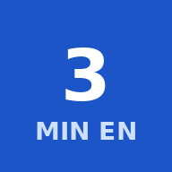

<!doctype html>
<html lang="ko">
<head>
<meta charset="utf-8">
<meta name="viewport" content="width=device-width,initial-scale=1,viewport-fit=cover">
<meta name="robots" content="noindex">
<meta name="theme-color" content="#1B55C8">
<meta name="apple-mobile-web-app-capable" content="yes">
<meta name="mobile-web-app-capable" content="yes">
<meta name="apple-mobile-web-app-title" content="3분 영어">
<meta name="apple-mobile-web-app-status-bar-style" content="default">
<link rel="manifest" href="manifest.json">
<link rel="icon" href="icon-192.png">
<link rel="apple-touch-icon" href="icon-180.png">
<style>:root{padding-top:env(safe-area-inset-top,0px);padding-bottom:env(safe-area-inset-bottom,0px)}body{margin:0}img{max-width:100%}[hidden]{display:none!important}</style>
<title>3분 비즈니스 영어</title>
<link rel="stylesheet" href="https://fonts.googleapis.com/css2?family=IBM+Plex+Sans+KR:wght@400;500;600;700&family=IBM+Plex+Mono:wght@500&display=swap">
<style>
/* Layout: one narrow phone column. Home = today's three rounds as a numbered sequence; a round = one card per screen with a single action at the bottom. */
:root{
  --bg:#EEF1F5; --surface:#FFFFFF; --ink:#141C26; --muted:#5A6878; --line:#D5DCE5;
  --accent:#1B55C8; --on-accent:#FFFFFF; --soft:#E3EBFA;
  --mail:#1B55C8; --phone:#0B7A6E; --meet:#8A3D8F;
  --near:#A85F00; --good:#12754A; --good-bg:#DDF2E6; --bad:#B3321F; --bad-bg:#FBE4DF;
  --sans:"IBM Plex Sans KR","Apple SD Gothic Neo","Malgun Gothic","Noto Sans KR",system-ui,sans-serif;
  --mono:"IBM Plex Mono",ui-monospace,Menlo,Consolas,monospace;
}
@media (prefers-color-scheme: dark){
  :root:not([data-theme="light"]){
    --bg:#0F141A; --surface:#19212B; --ink:#E9EEF4; --muted:#96A4B4; --line:#2C3743;
    --accent:#7BA6FF; --on-accent:#0B1322; --soft:#1E2B45;
    --mail:#7BA6FF; --phone:#4FC9B8; --meet:#D08BD5;
    --near:#F0A94A; --good:#62D39A; --good-bg:#143326; --bad:#FF8E7A; --bad-bg:#3A1B16;
    color-scheme:dark;
  }
}
:root[data-theme="dark"]{
  --bg:#0F141A; --surface:#19212B; --ink:#E9EEF4; --muted:#96A4B4; --line:#2C3743;
  --accent:#7BA6FF; --on-accent:#0B1322; --soft:#1E2B45;
  --mail:#7BA6FF; --phone:#4FC9B8; --meet:#D08BD5;
  --near:#F0A94A; --good:#62D39A; --good-bg:#143326; --bad:#FF8E7A; --bad-bg:#3A1B16;
  color-scheme:dark;
}
*{box-sizing:border-box}
body{background:var(--bg);color:var(--ink);font-family:var(--sans);font-size:16px;line-height:1.55;
  padding-left:max(16px,env(safe-area-inset-left,0px));padding-right:max(16px,env(safe-area-inset-right,0px));padding-block:20px 40px}
#app{max-width:460px;margin:0 auto;display:flex;flex-direction:column;gap:20px}
h1{font-size:26px;line-height:1.2;margin:0;font-weight:700;letter-spacing:-.01em;text-wrap:balance}
h2{font-size:13px;margin:0;font-weight:600;color:var(--muted);letter-spacing:.04em}
p{margin:0}
button{font:inherit;color:inherit;cursor:pointer;-webkit-tap-highlight-color:transparent}
button:focus-visible{outline:3px solid var(--accent);outline-offset:2px}
.mono{font-family:var(--mono);font-size:12px;letter-spacing:.03em;color:var(--muted)}
.top{display:flex;justify-content:space-between;align-items:flex-end;gap:12px}
.streak{font-family:var(--mono);font-size:13px;color:var(--accent);white-space:nowrap}
.block{display:flex;flex-direction:column;gap:10px}

/* today's rounds */
.rounds{background:var(--surface);border:1px solid var(--line);border-radius:14px;overflow:hidden}
.round{display:flex;align-items:center;gap:14px;padding:14px 16px;width:100%;background:none;border:0;text-align:left;border-top:1px solid var(--line)}
.round:first-child{border-top:0}
.round .n{font-family:var(--mono);font-size:15px;width:30px;height:30px;border-radius:50%;display:grid;place-items:center;border:1.5px solid var(--line);color:var(--muted);flex:none}
.round .t{flex:1;min-width:0}
.round .t b{display:block;font-weight:600}
.round .t span{font-size:13px;color:var(--muted)}
.round .s{font-size:13px;color:var(--muted);white-space:nowrap}
.round.done .n{background:var(--good-bg);border-color:transparent;color:var(--good)}
.round.done .s{color:var(--good)}
.round.next .n{background:var(--accent);border-color:var(--accent);color:var(--on-accent)}
.round.next .s{color:var(--accent);font-weight:600}
.cta{width:100%;padding:16px;border-radius:14px;border:0;background:var(--accent);color:var(--on-accent);font-weight:600;font-size:17px}
.cta[disabled]{background:var(--line);color:var(--muted);border-color:transparent;opacity:1;cursor:default}
.ghost{width:100%;padding:14px;border-radius:14px;border:1.5px solid var(--line);background:transparent;font-weight:500}
.chips{display:flex;flex-wrap:wrap;gap:8px}
.chip{padding:8px 14px;border-radius:999px;border:1.5px solid var(--line);background:transparent;font-size:14px}
.chip[aria-pressed="true"]{background:var(--ink);color:var(--bg);border-color:var(--ink)}
.bars{display:flex;flex-direction:column;gap:10px}
.bar{display:grid;grid-template-columns:44px 1fr 48px;align-items:center;gap:10px;font-size:14px}
.bar i{display:block;height:8px;border-radius:4px;background:var(--line);overflow:hidden}
.bar i u{display:block;height:100%;border-radius:4px}
.bar span:last-child{font-family:var(--mono);font-size:12px;color:var(--muted);text-align:right;font-variant-numeric:tabular-nums}
.note{font-size:13px;color:var(--muted)}

/* session */
.sbar{display:flex;align-items:center;gap:12px}
.x{width:40px;height:40px;border-radius:50%;border:0;background:transparent;font-size:22px;color:var(--muted);flex:none}
.prog{flex:1;height:6px;border-radius:3px;background:var(--line);overflow:hidden}
.prog u{display:block;height:100%;background:var(--accent);border-radius:3px;transition:width .25s}
@media (prefers-reduced-motion: reduce){.prog u{transition:none}}
.card{background:var(--surface);border:1px solid var(--line);border-radius:18px;padding:22px 20px;display:flex;flex-direction:column;gap:14px}
.cat{font-family:var(--mono);font-size:12px;letter-spacing:.06em}
.cat.m{color:var(--mail)}.cat.p{color:var(--phone)}.cat.t{color:var(--meet)}
.ko{font-size:17px;color:var(--muted)}
.ko.big{font-size:21px;color:var(--ink);font-weight:600;line-height:1.4}
.en{font-size:25px;line-height:1.3;font-weight:600;letter-spacing:-.01em;overflow-wrap:anywhere}
.tip{font-size:14px;background:var(--soft);border-radius:10px;padding:10px 12px}
.listen{align-self:flex-start;display:inline-flex;align-items:center;gap:8px;padding:9px 14px;border-radius:999px;border:1.5px solid var(--line);background:transparent;font-size:14px}
.listen svg{width:16px;height:16px;fill:none;stroke:currentColor;stroke-width:2;stroke-linecap:round;stroke-linejoin:round}
.opts{display:flex;flex-direction:column;gap:10px}
.opt{padding:14px 16px;border-radius:12px;border:1.5px solid var(--line);background:var(--surface);text-align:left;font-size:16px;line-height:1.4}
.opt.ok{border-color:var(--good);background:var(--good-bg);color:var(--good)}
.opt.no{border-color:var(--bad);background:var(--bad-bg);color:var(--bad)}
.slot{min-height:58px;border-bottom:2px solid var(--line);padding-bottom:10px;display:flex;flex-wrap:wrap;gap:8px;align-content:flex-start}
.bank{display:flex;flex-wrap:wrap;gap:8px}
.tok{padding:9px 13px;border-radius:10px;border:1.5px solid var(--line);background:var(--surface);font-size:17px;font-weight:500}
.tok.used{visibility:hidden}
.fb{border-radius:12px;padding:12px 14px;font-size:15px}
.fb.ok{background:var(--good-bg);color:var(--good)}
.fb.no{background:var(--bad-bg);color:var(--bad)}
.fb b{display:block;font-size:17px;margin-top:2px}
.two{display:grid;grid-template-columns:1fr 1fr;gap:10px}
.two .cta.alt{background:transparent;color:var(--ink);border:1.5px solid var(--line)}
.sit{font-size:14px;color:var(--muted);margin-top:-4px}
.hint{font-family:var(--mono);font-size:16px;letter-spacing:.04em;background:var(--soft);border-radius:10px;padding:10px 12px;overflow-wrap:anywhere}
.lbl{font-size:12px;color:var(--muted);margin-bottom:-8px}
.mine{font-size:17px;color:var(--muted);overflow-wrap:anywhere}
.w-ok{color:var(--good)}
.w-no{color:var(--bad);text-decoration:underline;text-decoration-thickness:2px;text-underline-offset:4px}
.say{display:flex;gap:10px;align-items:stretch}
.say textarea{flex:1;min-width:0;font:inherit;font-size:18px;padding:12px 14px;border-radius:12px;border:1.5px solid var(--line);background:var(--surface);color:var(--ink);resize:none}
.say textarea:focus{outline:none;border-color:var(--accent)}
.mic{flex:none;display:flex;flex-direction:column;align-items:center;justify-content:center;gap:4px;width:72px;border-radius:12px;border:1.5px solid var(--accent);background:var(--soft);color:var(--accent);font-size:13px;font-weight:600}
.mic svg{width:22px;height:22px;fill:none;stroke:currentColor;stroke-width:2;stroke-linecap:round}
.mic.on{background:var(--bad);border-color:var(--bad);color:#fff}
.howto{font-size:14px;color:var(--muted);background:var(--surface);border:1px solid var(--line);border-radius:12px;padding:10px 14px}
.howto summary{cursor:pointer;font-weight:600;color:var(--accent)}
.howto ol{margin:8px 0;padding-left:20px;display:flex;flex-direction:column;gap:4px;color:var(--ink)}
.howto p{font-size:13px}
.w-near{color:var(--near);text-decoration:underline dotted;text-decoration-thickness:2px;text-underline-offset:4px}
.ghost.small{padding:10px;font-size:14px}
.notice{background:var(--soft);border-radius:12px;padding:12px 14px;display:flex;flex-direction:column;gap:6px;font-size:14px}
.notice a{color:var(--accent);font-weight:600;overflow-wrap:anywhere}
.code{width:100%;font-family:var(--mono);font-size:12px;padding:10px;border-radius:10px;border:1.5px solid var(--line);background:var(--bg);color:var(--ink);resize:none;margin-top:8px}
.howto .two{margin-top:8px}
.howto .cta{margin-top:8px}
.bkmsg{margin-top:8px;color:var(--ink)}
.auto{position:relative;overflow:hidden;display:flex;align-items:center;gap:12px;background:var(--soft);border-radius:12px;padding:12px 14px}
.auto .at{flex:1;min-width:0;display:flex;flex-direction:column}
.auto .at span{font-size:13px;color:var(--muted)}
.auto .ghost.small{width:auto;flex:none;padding:8px 12px;background:var(--surface)}
.cd{flex:none;width:44px;height:44px;border-radius:50%;display:grid;place-items:center;background:var(--accent);color:var(--on-accent);font-size:22px;font-weight:700;font-variant-numeric:tabular-nums}
.auto.on .dot{flex:none;width:14px;height:14px;border-radius:50%;background:var(--bad);margin:0 15px;animation:pulse 1s ease-in-out infinite}
.auto .limit{position:absolute;left:0;bottom:0;height:4px;background:var(--bad);animation:shrink 5s linear forwards}
@keyframes pulse{50%{transform:scale(1.5);opacity:.5}}
@keyframes shrink{from{width:100%}to{width:0}}
@media (prefers-reduced-motion: reduce){.auto.on .dot,.auto .limit{animation:none}}
.w-minor{color:var(--muted);text-decoration:underline dotted;text-underline-offset:4px}
.install{background:var(--surface);border:1.5px solid var(--accent);border-radius:14px;padding:14px;display:flex;flex-direction:column;gap:10px}
.ihead{display:flex;gap:12px;align-items:center}
.ihead img{border-radius:10px;flex:none}
.ihead div{display:flex;flex-direction:column;min-width:0}
.ihead span{font-size:13px;color:var(--muted)}
.install ol{margin:0;padding-left:20px;display:flex;flex-direction:column;gap:6px;font-size:15px}
.sel{user-select:all;-webkit-user-select:all;color:var(--ink);overflow-wrap:anywhere}
.hints{display:flex;flex-direction:column;gap:10px}
.hint1{font-size:16px;background:var(--soft);border-radius:10px;padding:10px 12px;display:flex;flex-direction:column;gap:2px}
.hint2{background:var(--soft);border-radius:10px;padding:10px 12px;display:flex;flex-direction:column;gap:8px}
.hints .hint{display:flex;flex-direction:column;gap:2px}
.lbl2{font-family:var(--sans);font-size:12px;letter-spacing:0;color:var(--muted)}
.chipw{display:flex;flex-wrap:wrap;gap:6px}
.wchip{padding:4px 10px;border-radius:8px;background:var(--surface);border:1px solid var(--line);font-size:16px;font-weight:500}
.prac{background:var(--surface);border:1px solid var(--line);border-radius:14px;padding:14px;display:flex;flex-direction:column;gap:10px}
.ph{display:flex;flex-direction:column}
.ph span{font-size:13px;color:var(--muted)}
.prac .ghost.small,.prac .mic.wide{display:flex;align-items:center;justify-content:center;gap:8px}
.prac .ghost.small svg,.mic.wide svg{width:18px;height:18px;fill:none;stroke:currentColor;stroke-width:2;stroke-linecap:round}
.mic.wide{width:100%;flex-direction:row;padding:12px}
.en.small{font-size:19px}
.listen.big{padding:14px 20px;font-size:16px;align-self:stretch;justify-content:center}
.listen.big svg{width:22px;height:22px}
.week{display:grid;grid-template-columns:repeat(7,1fr);gap:6px}
.wk{display:flex;flex-direction:column;align-items:center;gap:6px;padding:8px 0;border-radius:10px;background:var(--surface);border:1px solid var(--line);font-size:13px}
.wk i{width:14px;height:14px;border-radius:50%;border:2px solid var(--line)}
.wk.on i{background:var(--good);border-color:var(--good)}
.wk.today{border-color:var(--accent)}
.wk .mono{font-size:11px}
.fld{display:flex;flex-direction:column;gap:6px;font-size:14px;color:var(--muted)}
.fld input{font:inherit;font-size:17px;color:var(--ink);background:var(--surface);border:1.5px solid var(--line);border-radius:12px;padding:12px 14px;min-width:0}
.fld input:focus{outline:none;border-color:var(--accent)}
.ghost.small.danger{border-color:var(--bad);color:var(--bad);width:auto}
.li .ghost.small{width:auto;flex:none}
.goal{background:var(--surface);border:1px solid var(--line);border-radius:14px;padding:12px 14px;display:flex;flex-direction:column;gap:8px}
.gtop{display:flex;justify-content:space-between;gap:8px}
.gtop span{font-size:13px;color:var(--muted)}
.gbar{display:block;height:8px;border-radius:4px;background:var(--line);overflow:hidden}
.gbar u{display:block;height:100%;background:var(--good);border-radius:4px}
.xgrid{display:grid;grid-template-columns:1fr 1fr;gap:10px}
.xbtn{display:flex;flex-direction:column;gap:4px;text-align:left;padding:14px;border-radius:14px;border:1.5px solid var(--line);background:var(--surface)}
.xbtn b{font-size:16px}
.xbtn span{font-size:13px;color:var(--muted);line-height:1.4}
.cmp{background:var(--surface);border:1px solid var(--line);border-radius:14px;padding:14px;display:flex;flex-direction:column;gap:10px}
.sbar .tt{display:flex;flex-direction:column;min-width:0}
.tries{display:flex;flex-direction:column;gap:8px}
.try{display:grid;grid-template-columns:36px 1fr 48px;gap:8px;align-items:center;background:var(--surface);border:1px solid var(--line);border-radius:12px;padding:10px 12px}
.try .en.small{font-size:16px;margin:0}
.code.big{font-family:var(--sans);font-size:17px;padding:12px 14px;background:var(--surface)}
.btnli{width:100%;text-align:left;cursor:pointer}
.badge{flex:none;font-family:var(--mono);font-size:12px;padding:4px 8px;border-radius:999px;background:var(--good-bg);color:var(--good)}
.script{display:flex;flex-direction:column;gap:8px}
.sl{display:flex;gap:10px;align-items:flex-start;background:var(--surface);border:1px solid var(--line);border-radius:12px;padding:10px 12px}
.sl.now{border-color:var(--accent);background:var(--soft)}
.sl .who{flex:none;width:26px;height:26px;border-radius:50%;display:grid;place-items:center;font-weight:700;font-size:13px;background:var(--accent);color:var(--on-accent)}
.sl.b .who{background:var(--phone)}
.sl p{margin:0}
.sko{font-size:13px;color:var(--muted)}
.qq{font-weight:600;margin-top:4px}
.chat{display:flex;flex-direction:column;gap:8px}
.bub{max-width:88%;padding:10px 14px;border-radius:16px;display:flex;flex-direction:column;gap:4px}
.bub p{margin:0}
.bub.ai{align-self:flex-start;background:var(--surface);border:1px solid var(--line);border-bottom-left-radius:4px}
.bub.me{align-self:flex-end;background:var(--accent);color:var(--on-accent);border-bottom-right-radius:4px}
.lnk{align-self:flex-start;background:none;border:0;padding:0;font-size:13px;color:var(--accent);text-decoration:underline}
.fixbox{align-self:flex-end;max-width:88%;background:var(--good-bg);border-radius:12px;padding:8px 12px;display:flex;flex-direction:column;gap:2px}
.fixbox p{margin:0}
.mailout{white-space:pre-wrap;overflow-wrap:anywhere;font-family:var(--sans);font-size:15px;background:var(--surface);border:1px solid var(--line);border-radius:12px;padding:12px 14px;margin:0}
.fb.mid{background:var(--soft);color:var(--ink)}
.three{display:grid;grid-template-columns:1fr 1fr 1fr;gap:8px}
.three .cta{font-size:14px;padding:14px 6px}
.three .cta.alt{background:transparent;color:var(--ink);border:1.5px solid var(--line)}
.big-num{font-size:44px;font-weight:700;line-height:1;font-variant-numeric:tabular-nums}

/* list */
.li{background:var(--surface);border:1px solid var(--line);border-radius:12px;padding:12px 14px;display:flex;gap:12px;align-items:center}
.li div{flex:1;min-width:0}
.li b{display:block;font-weight:600;overflow-wrap:anywhere}
.li span{font-size:13px;color:var(--muted)}
.li .listen{padding:8px;border-radius:50%;align-self:center}
.li.new b{color:var(--muted);font-weight:500}
</style>

</head>
<body>
<div id="app"></div>
<script src="audio.js"></script>

<script>
(function(){
"use strict";
var DATA=[
["m","첨부 파일 확인 부탁드립니다.","Please find the attached file.","Please find ~ : ~을 확인해 주세요 (메일에서 가장 흔한 표현)","거래처에 자료 파일을 붙여 메일을 보낼 때"],
["m","발주서를 첨부합니다.","I have attached the purchase order.","purchase order = 발주서, 줄여서 PO","공급처에 발주서를 메일로 보낼 때"],
["m","빠른 회신 부탁드립니다.","I look forward to your prompt reply.","prompt reply = 빠른 답장","급한 건이라 답장을 빨리 받고 싶을 때"],
["m","납기일을 확인해 주시겠어요?","Could you confirm the delivery date?","Could you ~? : 정중하게 부탁할 때","물건이 언제 도착하는지 확인하고 싶을 때"],
["m","견적서를 보내 주세요.","Please send us a quotation.","quotation = 견적서 (quote 라고도 함)","새 제품 가격을 알아보려고 메일을 쓸 때"],
["m","메일 잘 받았습니다.","Thank you for your email.","답장의 첫 문장으로 그대로 쓰면 됩니다","거래처 메일에 답장을 시작할 때"],
["m","답변이 늦어 죄송합니다.","I apologize for the late reply.","apologize for ~ : ~에 대해 사과하다","며칠 지나서야 답장을 쓸 때"],
["m","수량을 변경하고 싶습니다.","We would like to change the quantity.","would like to ~ : ~하고 싶습니다 (want 보다 정중)","이미 넣은 주문의 개수를 바꾸고 싶을 때"],
["m","출고 일정을 알려 주세요.","Please let us know the shipping schedule.","let us know = 알려 주세요","물건이 언제 나가는지 알고 싶을 때"],
["m","다음 주까지 받을 수 있을까요?","Can we receive it by next week?","by ~ : ~까지 (기한)","기한을 정해 받을 수 있는지 물을 때"],
["m","확인 후 다시 연락드리겠습니다.","I will get back to you after checking.","get back to you = 다시 연락드리다","바로 답하기 어려워 시간이 필요할 때"],
["m","재고가 있는지 확인해 주세요.","Please check if it is in stock.","in stock = 재고 있음 / out of stock = 품절","주문 전에 물건이 있는지 물을 때"],
["m","송장을 보내 드립니다.","I am sending you the invoice.","invoice = 송장, 청구서","대금 청구서를 보낼 때"],
["m","문의 사항이 있으면 연락 주세요.","Please contact me if you have any questions.","메일 끝인사로 자주 씁니다","메일을 마무리할 때"],
["m","주문을 확정하겠습니다.","We would like to confirm the order.","confirm = 확정하다, 확인하다","견적을 보고 주문하기로 결정했을 때"],
["m","납기가 며칠 지연될 예정입니다.","The delivery will be delayed by a few days.","be delayed by ~ : ~만큼 늦어지다","우리 쪽 납품이 늦어진다고 알릴 때"],
["m","불편을 드려 죄송합니다.","We apologize for the inconvenience.","inconvenience = 불편","문제가 생겨 상대에게 사과할 때"],
["m","결제 조건을 알려 주세요.","Please let us know the payment terms.","payment terms = 결제 조건","대금을 언제 어떻게 내는지 물을 때"],
["m","샘플을 받아 볼 수 있을까요?","Could we get a sample?","Could we ~? : 우리가 ~할 수 있을까요?","주문 전에 물건을 먼저 보고 싶을 때"],
["m","협조에 감사드립니다.","Thank you for your cooperation.","cooperation = 협조","도움을 받은 뒤 메일을 끝낼 때"],

["p","여보세요, 준입니다.","Hello, this is Jun speaking.","전화에서는 I am 대신 this is 를 씁니다","걸려 온 전화를 받으며 이름을 말할 때"],
["p","누구를 찾으세요?","Who would you like to speak to?","speak to ~ : ~와 통화하다","전화한 사람이 누구를 찾는지 물을 때"],
["p","잠시만 기다려 주세요.","Please hold on a moment.","hold on = (전화를 끊지 않고) 기다리다","확인할 동안 전화를 끊지 말라고 할 때"],
["p","담당자를 바꿔 드리겠습니다.","I will put you through to the person in charge.","put through = 전화를 연결하다 / person in charge = 담당자","담당자에게 전화를 넘겨줄 때"],
["p","매니저님은 지금 자리에 안 계십니다.","The manager is not available right now.","not available = 자리에 없다, 통화가 어렵다","찾는 사람이 자리에 없을 때"],
["p","메시지를 남기시겠어요?","Would you like to leave a message?","leave a message = 메시지를 남기다","없는 사람 대신 말을 전해 줄지 물을 때"],
["p","다시 전화드리겠습니다.","I will call you back.","call back = 다시 전화하다","지금은 통화가 어려워 나중에 걸겠다고 할 때"],
["p","조금 천천히 말씀해 주시겠어요?","Could you speak a little more slowly?","못 알아들을 때 가장 먼저 쓸 문장","상대 말이 너무 빨라 못 알아들을 때"],
["p","다시 한번 말씀해 주시겠어요?","Could you say that again, please?","say that again = 다시 말하다","방금 한 말을 놓쳤을 때"],
["p","잘 안 들립니다.","I can't hear you very well.","통화 상태가 나쁠 때","통화 음질이 나쁠 때"],
["p","성함 철자를 알려 주시겠어요?","Could you spell your name, please?","spell = 철자를 말하다","상대 이름을 정확히 받아 적어야 할 때"],
["p","어떤 용건으로 전화하셨나요?","May I ask what this is regarding?","regarding = ~에 관하여","처음 전화한 사람의 용건을 물을 때"],
["p","주문 건으로 전화드렸습니다.","I am calling about our order.","I am calling about ~ : ~ 건으로 전화드렸습니다","주문 건으로 거래처에 전화를 걸었을 때"],
["p","전화번호를 알려 주시겠어요?","May I have your phone number?","May I have ~? : ~을 알려 주시겠어요?","나중에 연락하려고 번호를 받을 때"],
["p","메일로 자세히 보내 드리겠습니다.","I will send you the details by email.","details = 자세한 내용","전화로 다 설명하기 어려운 내용이 있을 때"],
["p","지금 통화 괜찮으세요?","Is this a good time to talk?","전화를 걸었을 때 첫 확인","전화를 건 직후 상대 상황을 물을 때"],
["p","확인하고 바로 알려 드리겠습니다.","Let me check and get back to you.","Let me ~ : 제가 ~하겠습니다","바로 답을 모를 때"],
["p","전화 주셔서 감사합니다.","Thank you for calling.","통화를 끝낼 때","통화를 마무리할 때"],
["p","제가 제대로 이해했는지 확인하겠습니다.","Let me confirm what you said.","숫자, 날짜를 되짚을 때 먼저 하는 말","날짜나 수량을 되짚어 확인하기 전에"],
["p","그분께 전해 드리겠습니다.","I will pass on your message.","pass on = 전달하다","자리에 없는 동료에게 말을 전하겠다고 할 때"],

["t","회의를 시작하겠습니다.","Let's get started.","get started = 시작하다","회의를 여는 첫마디"],
["t","오늘 안건은 납기 일정입니다.","Today's agenda is the delivery schedule.","agenda = 안건","오늘 논의할 주제를 알릴 때"],
["t","제 의견은 이렇습니다.","Here is what I think.","의견을 꺼낼 때 여는 말","내 생각을 말하기 시작할 때"],
["t","그 의견에 동의합니다.","I agree with that.","agree with ~ : ~에 동의하다","상대 의견이 맞다고 할 때"],
["t","죄송하지만 생각이 조금 다릅니다.","I'm afraid I see it differently.","I'm afraid ~ : 죄송하지만 ~ (부드럽게 반대)","상대 의견에 정중하게 반대할 때"],
["t","좀 더 자세히 설명해 주시겠어요?","Could you explain that in more detail?","in more detail = 더 자세히","설명이 부족해 더 듣고 싶을 때"],
["t","질문이 하나 있습니다.","I have a question.","끼어들 때 가장 짧고 안전한 문장","회의 중 묻고 싶은 것이 생겼을 때"],
["t","그 부분은 확인이 필요합니다.","We need to check on that.","check on ~ : ~을 확인하다","그 자리에서 답할 수 없는 내용일 때"],
["t","다음 안건으로 넘어가겠습니다.","Let's move on to the next item.","move on to ~ : ~로 넘어가다","한 주제가 끝나고 다음으로 넘어갈 때"],
["t","일정을 조정할 수 있을까요?","Can we adjust the schedule?","adjust = 조정하다","날짜를 바꾸자고 제안할 때"],
["t","가격을 조금 낮춰 주실 수 있나요?","Could you lower the price a little?","lower the price = 가격을 낮추다","가격을 협상할 때"],
["t","내부적으로 논의해 보겠습니다.","We will discuss it internally.","바로 답하기 어려울 때","바로 결정하기 어려울 때"],
["t","요점을 정리하겠습니다.","Let me summarize the main points.","summarize = 요약하다","회의 끝에 결론을 정리할 때"],
["t","언제까지 가능하신가요?","When can you have it done?","have it done = 끝내다, 완료하다","마감 날짜를 물을 때"],
["t","다음 회의는 언제로 할까요?","When should we have the next meeting?","should we ~? : ~할까요?","다음 일정을 잡을 때"],
["t","회의록을 메일로 보내겠습니다.","I will send the meeting notes by email.","meeting notes = 회의록 (minutes 라고도 함)","회의가 끝난 뒤 기록을 공유할 때"],
["t","그 조건이면 가능합니다.","We can do it on those terms.","on those terms = 그 조건으로","상대 조건을 받아들일 때"],
["t","시간 내 주셔서 감사합니다.","Thank you for your time.","회의를 마칠 때","회의를 마치며 인사할 때"],
["t","한 가지 제안이 있습니다.","I have a suggestion.","suggestion = 제안","새로운 아이디어를 내고 싶을 때"],
["t","오늘은 여기까지 하겠습니다.","That's all for today.","회의를 끝내는 말","회의를 끝낼 때"],
["m","회의 일정을 잡고 싶습니다.","I would like to schedule a meeting.","schedule a meeting = 회의 일정을 잡다","거래처와 만날 날짜를 정하고 싶을 때"],
["m","아래 내용을 확인해 주세요.","Please see the details below.","below = 아래에","메일 본문에 정리한 내용을 보여 줄 때"],
["m","수정된 견적서를 보내 드립니다.","I am sending you the revised quotation.","revised = 수정된","가격을 고친 견적서를 다시 보낼 때"],
["m","이번 주 금요일까지 회신 부탁드립니다.","Please reply by this Friday.","reply by ~ : ~까지 답하다","답장 기한을 정해 줄 때"],
["m","주문이 정상적으로 접수되었습니다.","Your order has been received.","has been received = 접수되었다","고객 주문을 받았다고 알릴 때"],
["m","배송 추적 번호를 알려 드립니다.","Here is the tracking number.","tracking number = 배송 추적 번호(운송장 번호)","출고 후 운송장 번호를 알려 줄 때"],
["m","제품 사양서를 보내 주실 수 있나요?","Could you send us the product specifications?","specifications = 사양서, 줄여서 specs","제품의 자세한 규격을 받고 싶을 때"],
["m","가격이 오른 이유를 여쭤봐도 될까요?","May I ask why the price has increased?","price has increased = 가격이 올랐다","단가가 올라 이유를 물을 때"],
["m","최소 주문 수량이 얼마인가요?","What is the minimum order quantity?","minimum order quantity = 최소 주문 수량, 줄여서 MOQ","한 번에 얼마나 주문해야 하는지 물을 때"],
["m","일부 제품이 파손된 채 도착했습니다.","Some of the items arrived damaged.","arrived damaged = 파손된 채 도착했다","받은 물건에 문제가 있을 때"],
["m","교환이나 환불이 가능할까요?","Is an exchange or refund possible?","exchange = 교환 / refund = 환불","불량품 처리를 요청할 때"],
["m","참고하시도록 사진을 첨부했습니다.","I have attached photos for your reference.","for your reference = 참고하시도록","문제 상황을 사진으로 보여 줄 때"],
["m","이 건은 제가 담당합니다.","I am in charge of this matter.","in charge of ~ : ~을 담당하다","내가 담당자라고 소개할 때"],
["m","담당자를 참조로 넣었습니다.","I have copied the person in charge.","copy = 메일 참조(CC)에 넣다","다른 사람을 메일에 함께 넣었을 때"],
["m","다음 주 월요일까지 출고할 수 있습니다.","We can ship it by next Monday.","ship = 출고하다, 보내다","출고 가능한 날짜를 알릴 때"],
["m","변동 사항이 있으면 알려 주세요.","Please let me know if there are any changes.","any changes = 변동 사항","일정이나 수량이 바뀔 수 있을 때"],
["m","지난 메일에 이어서 연락드립니다.","I am following up on my last email.","follow up = 이어서 확인하다","답이 없어 다시 메일을 보낼 때"],
["m","입금 확인 부탁드립니다.","Please confirm the payment.","payment = 대금, 입금","돈을 보낸 뒤 확인을 요청할 때"],
["m","오늘 중으로 처리하겠습니다.","I will take care of it today.","take care of ~ : ~을 처리하다","요청을 바로 처리하겠다고 할 때"],
["m","좋은 하루 보내세요.","Have a great day.","메일 마지막 인사로 자주 씁니다","메일을 가볍게 끝낼 때"],
["p","누구시라고 전해 드릴까요?","May I ask who is calling?","who is calling = 전화 거신 분","전화 건 사람의 이름을 물을 때"],
["p","매니저님은 지금 다른 전화를 받고 계십니다.","The manager is on another call.","on another call = 다른 통화 중","찾는 사람이 통화 중일 때"],
["p","몇 시쯤이 편하세요?","What time is good for you?","good for you = 편하신","다시 전화할 시간을 정할 때"],
["p","이 번호로 다시 전화 주세요.","Please call me back at this number.","call back at ~ : ~로 다시 전화하다","연락받을 번호를 알려 줄 때"],
["p","통화가 잠깐 끊겼던 것 같습니다.","I think we got cut off.","get cut off = 통화가 끊기다","통화가 끊겼다 다시 연결됐을 때"],
["p","숫자를 다시 한번 불러 주시겠어요?","Could you repeat the numbers?","repeat = 다시 말하다","수량이나 번호를 정확히 받아 적을 때"],
["p","주문 번호가 어떻게 되나요?","What is your order number?","order number = 주문 번호","주문을 조회하기 전에"],
["p","제가 지금 확인해 보겠습니다.","Let me check that for you.","for you = 상대를 위해","상대 요청을 바로 찾아볼 때"],
["p","기다려 주셔서 감사합니다.","Thank you for waiting.","보류 후 통화를 다시 이어 갈 때 씁니다","잠시 기다리게 한 뒤 다시 말할 때"],
["p","영어가 서툴러서 천천히 말씀해 주세요.","My English is not perfect, so please speak slowly.","not perfect = 서툴다(부드러운 표현)","영어 통화를 시작하며 양해를 구할 때"],
["p","그 내용을 메일로 보내 주실 수 있나요?","Could you send that by email?","by email = 메일로","복잡한 내용을 글로 받고 싶을 때"],
["p","내일 오전에 전화드리겠습니다.","I will call you tomorrow morning.","tomorrow morning = 내일 오전","다음 통화 시간을 약속할 때"],
["p","담당자가 곧 연락드릴 겁니다.","The person in charge will contact you soon.","contact = 연락하다","담당자 대신 전화를 받았을 때"],
["p","배송은 언제 도착하나요?","When will the delivery arrive?","arrive = 도착하다","물건 도착 날짜를 물을 때"],
["p","어떤 문제인지 말씀해 주시겠어요?","Could you tell me what the problem is?","what the problem is = 무엇이 문제인지","불만이나 문제 전화를 받았을 때"],
["p","불편을 드려 정말 죄송합니다.","I am very sorry for the trouble.","trouble = 불편, 문제","전화로 사과할 때"],
["p","바로 처리해 드리겠습니다.","I will take care of it right away.","right away = 바로","문제를 즉시 해결하겠다고 할 때"],
["p","제가 적어 두겠습니다.","Let me write that down.","write down = 적어 두다","중요한 내용을 받아 적을 때"],
["p","그럼 그렇게 진행하겠습니다.","Then we will go ahead with that.","go ahead = 진행하다","통화로 합의한 내용을 확정할 때"],
["p","좋은 하루 보내세요. 안녕히 계세요.","Have a nice day. Goodbye.","통화를 끝내는 인사","전화를 끊을 때"],
["t","모두 오셨나요?","Is everyone here?","everyone = 모두","회의 시작 전에 참석자를 확인할 때"],
["t","오늘 회의 목적은 가격 논의입니다.","The purpose of today's meeting is to discuss prices.","purpose = 목적","회의 목적을 먼저 밝힐 때"],
["t","제 화면을 공유하겠습니다.","Let me share my screen.","share = 공유하다","온라인 회의에서 자료를 보여 줄 때"],
["t","제 목소리 잘 들리시나요?","Can you hear me clearly?","clearly = 또렷하게","온라인 회의를 시작할 때"],
["t","잠깐 끼어들어도 될까요?","May I interrupt for a moment?","interrupt = 끼어들다","상대 말 중간에 말해야 할 때"],
["t","제가 제대로 이해했는지 확인하고 싶습니다.","I want to make sure I understand correctly.","make sure = 확실히 하다","상대 말을 정확히 이해했는지 확인할 때"],
["t","좋은 지적입니다.","That's a good point.","good point = 좋은 지적","상대 의견을 인정할 때"],
["t","다른 방법도 검토해 볼 수 있을까요?","Can we consider other options?","consider = 검토하다 / options = 방법","대안을 제시하고 싶을 때"],
["t","비용이 예상보다 높습니다.","The cost is higher than we expected.","higher than expected = 예상보다 높다","견적이 예산을 넘을 때"],
["t","대량 주문이면 할인해 주실 수 있나요?","Can you offer a discount for a larger order?","larger order = 대량 주문","대량 주문 할인을 물을 때"],
["t","납기를 앞당길 수 있을까요?","Can we move up the delivery date?","move up = 앞당기다","납기를 당겨 달라고 요청할 때"],
["t","그 부분은 저희가 동의하기 어렵습니다.","It is difficult for us to agree on that.","agree on ~ : ~에 합의하다","조건을 받아들이기 어려울 때"],
["t","서로 조금씩 양보하면 어떨까요?","How about meeting in the middle?","meet in the middle = 서로 양보하다","협상에서 타협점을 제안할 때"],
["t","매니저와 상의해 보겠습니다.","I will discuss it with my manager.","discuss = 상의하다","혼자 결정할 수 없을 때"],
["t","다음 단계는 무엇인가요?","What are the next steps?","next steps = 다음 할 일","회의 끝에 할 일을 정리할 때"],
["t","누가 맡을지와 마감일을 정합시다.","Let's decide who is responsible and the deadline.","responsible = 책임지는 / deadline = 마감일","할 일을 나눌 때"],
["t","이 부분은 제가 맡겠습니다.","I will take care of this part.","take care of ~ : ~을 맡다","일을 맡겠다고 할 때"],
["t","정리하면, 오늘 논의한 내용은 다음과 같습니다.","To sum up, here is what we discussed today.","to sum up = 정리하면","회의 끝에 요약할 때"],
["t","다른 질문 있으신가요?","Are there any other questions?","any other = 다른","회의를 마치기 전에"],
["t","성과 있는 회의였습니다.","It was a productive meeting.","productive = 성과 있는","회의를 좋게 마무리할 때"]
];
var DIALOGS=[{"id":"d1","cat":"p","title":"납기 확인 전화","lines":[["A","Hello, this is Jun from the purchasing team. Is this a good time to talk?","안녕하세요, 구매팀 준입니다. 지금 통화 괜찮으세요?"],["B","Sure. How can I help you?","네. 무엇을 도와드릴까요?"],["A","I'm calling about our order of five hundred boxes. When will it be shipped?","500상자 주문 건으로 전화드렸습니다. 언제 출고되나요?"],["B","Let me check. It will be shipped this Thursday.","확인해 보겠습니다. 이번 주 목요일에 출고됩니다."],["A","Great. Could you send me the tracking number by email?","좋네요. 운송장 번호를 메일로 보내 주시겠어요?"],["B","Of course. I'll send it on Thursday afternoon.","물론이죠. 목요일 오후에 보내 드리겠습니다."]],"qs":[["주문 수량은 얼마인가요?",["500상자","50상자","1,500상자"],0],["언제 출고되나요?",["이번 주 목요일","이번 주 화요일","다음 주 금요일"],0],["운송장 번호는 어떻게 받기로 했나요?",["메일로","전화로","문자로"],0]]},{"id":"d2","cat":"p","title":"담당자가 자리에 없을 때","lines":[["A","Good morning. May I speak to Mr. Lee?","안녕하세요. 이 과장님과 통화할 수 있을까요?"],["B","I'm sorry, he is in a meeting right now.","죄송하지만 지금 회의 중이십니다."],["A","I see. When will he be available?","그렇군요. 언제 통화 가능하실까요?"],["B","He should be back around three o'clock. Would you like to leave a message?","3시쯤 돌아오실 겁니다. 메시지를 남기시겠어요?"],["A","Yes, please tell him to call me back about the price change.","네, 가격 변경 건으로 다시 전화 달라고 전해 주세요."],["B","Sure. Could I have your phone number?","알겠습니다. 전화번호를 알려 주시겠어요?"]],"qs":[["이 과장은 지금 무엇을 하고 있나요?",["회의 중","출장 중","휴가 중"],0],["몇 시쯤 돌아오나요?",["3시쯤","1시쯤","5시쯤"],0],["남긴 메시지 내용은?",["가격 변경 건으로 전화 요청","주문 취소 요청","샘플 요청"],0]]},{"id":"d3","cat":"p","title":"파손 제품 문의","lines":[["A","Hi, I'm calling because some of the items arrived damaged.","안녕하세요, 일부 제품이 파손된 채 도착해서 전화드렸습니다."],["B","I'm very sorry to hear that. How many items were damaged?","정말 죄송합니다. 몇 개가 파손되었나요?"],["A","About twenty out of two hundred.","200개 중 약 20개입니다."],["B","Could you send us some photos? We will replace them right away.","사진을 보내 주시겠어요? 바로 교체해 드리겠습니다."],["A","Okay. I'll email the photos today.","네. 오늘 사진을 메일로 보내겠습니다."],["B","Thank you. We'll ship the replacements by Friday.","감사합니다. 교체품은 금요일까지 보내 드리겠습니다."]],"qs":[["파손된 제품은 몇 개인가요?",["약 20개","약 200개","약 2개"],0],["상대가 요청한 것은?",["사진","환불 신청서","새 주문서"],0],["교체품은 언제까지 보내나요?",["금요일까지","오늘","다음 달"],0]]},{"id":"d4","cat":"p","title":"번호 다시 확인하기","lines":[["A","Hello? I'm sorry, I can't hear you very well.","여보세요? 죄송하지만 잘 안 들립니다."],["B","Can you hear me now?","지금은 들리세요?"],["A","Yes, much better. Could you repeat the order number?","네, 훨씬 낫네요. 주문 번호를 다시 말씀해 주시겠어요?"],["B","Sure. It's seven, four, two, nine.","네. 칠, 사, 이, 구입니다."],["A","Seven, four, two, nine. Got it. I'll check and call you back in ten minutes.","7429, 알겠습니다. 확인하고 10분 뒤에 다시 전화드리겠습니다."]],"qs":[["주문 번호는?",["7429","7249","4729"],0],["다시 전화하기로 한 때는?",["10분 뒤","내일","1시간 뒤"],0]]},{"id":"d5","cat":"t","title":"가격 협상","lines":[["A","Thank you for your quote. However, the price is higher than we expected.","견적 감사합니다. 그런데 가격이 예상보다 높습니다."],["B","I understand. What price were you thinking of?","이해합니다. 어느 정도 가격을 생각하셨나요?"],["A","If we order one thousand units, can you offer a ten percent discount?","1,000개를 주문하면 10% 할인이 가능할까요?"],["B","Ten percent is difficult. How about five percent?","10%는 어렵습니다. 5%는 어떠세요?"],["A","Let me discuss it with my manager. I'll get back to you tomorrow.","매니저와 상의해 보겠습니다. 내일 다시 연락드리겠습니다."]],"qs":[["할인 조건으로 말한 주문 수량은?",["1,000개","100개","10,000개"],0],["상대가 제안한 할인율은?",["5%","10%","15%"],0],["준은 언제 답하기로 했나요?",["내일","오늘 오후","다음 주"],0]]},{"id":"d6","cat":"t","title":"납기 앞당기기","lines":[["A","Can we move up the delivery date to next Monday?","납기를 다음 주 월요일로 앞당길 수 있을까요?"],["B","That might be difficult. Our factory is very busy this month.","어려울 수도 있습니다. 이번 달은 공장이 아주 바쁩니다."],["A","We really need it before our customer's event.","고객 행사 전에 꼭 필요합니다."],["B","I see. We can ship half of the order on Monday and the rest on Wednesday.","알겠습니다. 절반은 월요일에, 나머지는 수요일에 보내 드릴 수 있습니다."],["A","That works for us. Thank you.","그렇게 하면 됩니다. 감사합니다."]],"qs":[["원래 원한 납기는?",["다음 주 월요일","이번 주 금요일","다음 주 수요일"],0],["정해진 해결 방법은?",["절반은 월요일, 나머지는 수요일","전부 수요일","전부 월요일"],0],["어렵다고 한 이유는?",["공장이 바빠서","재료가 부족해서","운송 파업 때문에"],0]]},{"id":"d7","cat":"t","title":"회의 시작","lines":[["A","Good morning, everyone. Let's get started.","안녕하세요, 여러분. 시작하겠습니다."],["B","Before we begin, can everyone hear me clearly?","시작하기 전에, 모두 제 목소리 잘 들리시나요?"],["A","Yes, we can. Today we have two items: the new price list and the shipping schedule.","네, 들립니다. 오늘 안건은 두 가지입니다. 새 가격표와 출고 일정입니다."],["B","Let's start with the shipping schedule.","출고 일정부터 시작하죠."],["A","Sure. The next shipment will leave on the fifteenth.","좋습니다. 다음 출고는 15일에 나갑니다."]],"qs":[["오늘 안건은 몇 가지인가요?",["2가지","3가지","1가지"],0],["먼저 다루기로 한 안건은?",["출고 일정","새 가격표","샘플"],0],["다음 출고일은?",["15일","5일","50일"],0]]},{"id":"d8","cat":"t","title":"회의 마무리","lines":[["A","To sum up, we agreed on the new design.","정리하면, 새 디자인으로 합의했습니다."],["B","What are the next steps?","다음 할 일은 무엇인가요?"],["A","Our team will send the final drawings by Wednesday.","저희 팀이 수요일까지 최종 도면을 보내겠습니다."],["B","And we will check the costs and reply by Friday.","그리고 저희는 비용을 확인해서 금요일까지 답하겠습니다."],["A","Great. I'll send the meeting notes this afternoon.","좋습니다. 회의록은 오늘 오후에 보내겠습니다."]],"qs":[["무엇에 합의했나요?",["새 디자인","새 가격","새 공장"],0],["수요일까지 할 일은?",["최종 도면 보내기","비용 확인","회의록 보내기"],0],["회의록은 언제 보내나요?",["오늘 오후","금요일","내일 아침"],0]]},{"id":"d9","cat":"m","title":"수정 견적서 메일","lines":[["A","Did you get the email from the supplier?","공급처에서 온 메일 받았어요?"],["B","Yes. They sent the revised quotation this morning.","네. 오늘 아침에 수정 견적서를 보냈어요."],["A","Is the price lower than before?","가격이 전보다 낮아졌나요?"],["B","Yes, about three percent lower. But the minimum order quantity is now two hundred.","네, 약 3% 낮아요. 그런데 최소 주문 수량이 이제 200개예요."],["A","Okay. Please forward it to me. I'll review it before lunch.","알겠어요. 저에게 전달해 주세요. 점심 전에 검토할게요."]],"qs":[["수정 견적서는 언제 왔나요?",["오늘 아침","어제 저녁","지난주"],0],["가격은 어떻게 바뀌었나요?",["약 3% 낮아짐","약 3% 높아짐","그대로"],0],["최소 주문 수량은?",["200개","300개","100개"],0]]},{"id":"d10","cat":"m","title":"늦어진 답장","lines":[["A","The customer is asking about the invoice again.","고객이 송장에 대해 또 묻고 있어요."],["B","Oh no, I haven't replied yet.","이런, 아직 답장을 못 했어요."],["A","Please reply today and apologize for the late reply.","오늘 답장하고 늦어서 죄송하다고 해 주세요."],["B","Okay. Should I attach the invoice again?","알겠어요. 송장을 다시 첨부할까요?"],["A","Yes, and copy me on the email.","네, 그리고 메일 참조에 저를 넣어 주세요."]],"qs":[["고객이 묻는 것은?",["송장","샘플","배송"],0],["B가 해야 할 일은?",["오늘 답장하고 사과하기","내일 전화하기","주문 취소하기"],0],["메일 참조에 넣을 사람은?",["A","고객사 사장","아무도 없음"],0]]},{"id":"d11","cat":"m","title":"샘플 요청","lines":[["A","The client wants to see a sample before they order.","고객이 주문 전에 샘플을 보고 싶어 해요."],["B","How many samples do they need?","샘플이 몇 개 필요하대요?"],["A","Just three. Can we send them by express?","세 개만요. 빠른 배송으로 보낼 수 있을까요?"],["B","Sure, they will arrive in two days.","네, 이틀 뒤에 도착할 거예요."],["A","Perfect. I'll let them know by email.","좋아요. 메일로 알려 줄게요."]],"qs":[["필요한 샘플 수는?",["3개","2개","5개"],0],["샘플은 언제 도착하나요?",["이틀 뒤","일주일 뒤","오늘"],0],["고객에게 어떻게 알리나요?",["메일로","전화로","직접 방문해서"],0]]},{"id":"d12","cat":"p","title":"결제 조건 문의","lines":[["A","Hello, I have a question about the payment terms.","안녕하세요, 결제 조건에 대해 질문이 있습니다."],["B","Sure. We usually ask for payment within thirty days.","네. 보통 30일 안에 결제를 요청드립니다."],["A","Can we pay half now and half after delivery?","지금 절반, 납품 후에 절반을 내도 될까요?"],["B","That should be fine for the first order.","첫 주문이니 괜찮을 것 같습니다."],["A","Great, thank you. Please send the details by email.","좋네요, 감사합니다. 자세한 내용은 메일로 보내 주세요."]],"qs":[["보통 결제 기한은?",["30일 안","13일 안","60일 안"],0],["준이 요청한 결제 방식은?",["지금 절반, 납품 후 절반","전액 먼저","전액 나중에"],0],["상대의 답은?",["첫 주문이라 괜찮다","불가능하다","매니저 확인이 필요하다"],0]]}];
var CAT={m:"메일",p:"전화",t:"회의"}, CATEN={m:"MAIL",p:"PHONE",t:"MEETING"}, CATVAR={m:"--mail",p:"--phone",t:"--meet"};
var ITEMS,CATN,BYID,ORDER;
/* 기본 문장 + 내가 추가한 문장(먼저 배움) */
function buildItems(){
  var base=DATA.map(function(d,i){return {id:d[0]+i,cat:d[0],ko:d[1],en:d[2],tip:d[3],sit:d[4]||"",ord:Math.floor(i/60)*20+i%20};});
  var cu=((S&&S.custom)||[]).map(function(c,k){return {id:c.id,cat:c.cat,ko:c.ko,en:c.en,tip:c.tip||"",sit:c.sit||"",ord:-1000+k,custom:true};});
  ITEMS=cu.concat(base);
  CATN={m:0,p:0,t:0};BYID={};
  ITEMS.forEach(function(x){CATN[x.cat]++;BYID[x.id]=x;});
  ORDER=ITEMS.slice().sort(function(a,b){return a.ord-b.ord||"mpt".indexOf(a.cat)-"mpt".indexOf(b.cat);});
}
var S=null;buildItems();
var NEW_PER_DAY=5, INT=[0,1,2,4,7,15], KEY="bizeng3-v1";
var ROUNDS=[
  {name:"새 표현 5개 배우기",sub:"보고, 듣고, 단어 순서 맞추기 · 약 3분"},
  {name:"골라 맞히기 복습",sub:"영어 문장 고르기와 듣고 뜻 고르기 · 약 2분"},
  {name:"상황 보고 말하기",sub:"힌트 받아 영어로 말하고 단어별로 확인 · 약 3분"}
];

function pad(n){return n<10?"0"+n:""+n;}
function dstr(d){return d.getFullYear()+"-"+pad(d.getMonth()+1)+"-"+pad(d.getDate());}
function today(){return dstr(new Date());}
function addDays(s,n){var p=s.split("-");var d=new Date(+p[0],+p[1]-1,+p[2]+n);return dstr(d);}
function esc(s){return String(s).replace(/[&<>"']/g,function(c){return {"&":"&amp;","<":"&lt;",">":"&gt;",'"':"&quot;","'":"&#39;"}[c];});}
function shuffle(a){a=a.slice();for(var i=a.length-1;i>0;i--){var j=Math.floor(Math.random()*(i+1));var t=a[i];a[i]=a[j];a[j]=t;}return a;}

function fresh(){return {v:1,items:{},days:{},focus:"all",updatedAt:0};}
function valid(s){return s&&typeof s==="object"&&s.items&&s.days;}
S=fresh();
try{var raw=localStorage.getItem(KEY);if(raw){var p=JSON.parse(raw);if(valid(p))S=p;}}catch(e){}
if(!S.focus)S.focus="all";
buildItems();
function perDay(){return S.perDay||5;}

/* ---- cross-device save (private per viewer) ---- */
var docRef=null, writing=false, dirty=false, syncState="local";
function pushRemote(){
  if(!docRef)return;
  if(writing){dirty=true;return;}
  writing=true;dirty=false;
  docRef.set({updatedAt:S.updatedAt,state:JSON.parse(JSON.stringify(S))}).then(function(){syncState="synced";},function(){syncState="local";})
    .then(function(){writing=false;if(dirty)pushRemote();else if(view==="home")render();});
}
function save(){
  S.updatedAt=Date.now();
  try{localStorage.setItem(KEY,JSON.stringify(S));}catch(e){}
  pushRemote();
}
var C=window.claude&&typeof window.claude.use==="function"?window.claude:null;
if(C){
  Promise.all([C.use("db"),C.use("user")]).then(function(r){
    var db=r[0],user=r[1];
    if(!db||!user)return;
    return user.id().then(function(id){
      if(!id)return;
      docRef=db.doc("data/users/"+id+"/progress");
      return docRef.get().then(function(snap){
        var d=snap.exists?snap.data():null;
        if(d&&valid(d.state)&&(d.updatedAt||0)>(S.updatedAt||0)){
          if(view==="home"||view==="list"){
            S=JSON.parse(JSON.stringify(d.state));buildItems();
            try{localStorage.setItem(KEY,JSON.stringify(S));}catch(e){}
          }
          syncState="synced";
        }else if((S.updatedAt||0)>0){pushRemote();}
        else{syncState="synced";}
        if(view==="home"||view==="list")render();
      });
    });
  }).catch(function(){});
}

/* ---- listening ---- */
/* 문장별 음성 파일을 페이지에 함께 실어 두고, 누르는 즉시 재생한다 */
var AUD=window.BIZ_AUDIO||null, player=null;
function hasAudio(id){return !!(AUD&&AUD[id])||!!(BYID[id]&&BYID[id].custom&&window.speechSynthesis&&window.SpeechSynthesisUtterance);}
function speak(id){
  if(!(AUD&&AUD[id])){
    if(hasAudio(id)){try{speechSynthesis.cancel();var u=new SpeechSynthesisUtterance(BYID[id].en);u.lang="en-US";u.rate=S.slow?0.7:0.9;speechSynthesis.speak(u);}catch(x){}}
    return;
  }
  try{
    if(!player)player=new Audio();
    player.pause();player.src=AUD[id];player.currentTime=0;
    player.playbackRate=S.slow?0.75:1;
    var pr=player.play();if(pr&&pr.catch)pr.catch(function(){});
  }catch(e){}
}
function canSpeak(){return !!AUD;}
var ICON='<svg viewBox="0 0 24 24" aria-hidden="true"><path d="M4 9v6h4l5 4V5L8 9H4z"/><path d="M16.5 8.5a5 5 0 0 1 0 7"/></svg>';
function listenBtn(id,label){
  if(!hasAudio(id))return "";
  return '<button class="listen" data-act="speak" data-id="'+id+'"'+(label?"":' aria-label="듣기"')+'>'+ICON+(label?"<span>"+label+"</span>":"")+"</button>";
}

/* ---- day / schedule logic ---- */
function day(){var t=today();if(!S.days[t])S.days[t]={"new":[],done:[0,0,0]};return S.days[t];}
function dueOld(){
  var t=today(),out=[];
  for(var id in S.items){var it=S.items[id];if(BYID[id]&&it.learned!==t&&it.due<=t)out.push(id);}
  out.sort(function(a,b){return S.items[a].due<S.items[b].due?-1:S.items[a].due>S.items[b].due?1:0;});
  return out.slice(0,5);
}
function pickNew(){
  var un=ORDER.filter(function(x){return !S.items[x.id];});
  var f=S.focus==="all"?un:un.filter(function(x){return x.cat===S.focus;});
  if(f.length<perDay())f=f.concat(un.filter(function(x){return f.indexOf(x)<0;}));
  return f.slice(0,perDay()).map(function(x){return x.id;});
}
function learnedCount(cat){var n=0;for(var id in S.items){if(BYID[id]&&(!cat||BYID[id].cat===cat))n++;}return n;}
function studied(k){var x=S.days[k];return !!(x&&((x.done&&(x.done[0]||x.done[1]||x.done[2]))||x.extra));}
function weekStart(k){var p=k.split("-"),d=new Date(+p[0],+p[1]-1,+p[2]),w=(d.getDay()+6)%7;return addDays(k,-w);}
/* 연속 일수: 한 주에 하루는 빠져도 이어진다(보호권) */
function streakInfo(){
  var n=0,d=today(),used={};
  if(!studied(d))d=addDays(d,-1);
  for(var g=0;g<4000;g++){
    if(studied(d)){n++;d=addDays(d,-1);continue;}
    var wk=weekStart(d),prev=addDays(d,-1);
    if(n>0&&!used[wk]&&studied(prev)){used[wk]=d;d=prev;continue;}
    break;
  }
  return {n:n,usedThisWeek:!!used[weekStart(today())]};
}
function streak(){return streakInfo().n;}
function weekDone(){var s=weekStart(today()),c=0;for(var i=0;i<7;i++){var k=addDays(s,i);if(k>today())break;if(studied(k))c++;}return c;}
function nextRound(){var d=day();for(var i=0;i<3;i++)if(!d.done[i])return i;return -1;}
function grade(id,ok){
  var t=today(),it=S.items[id];
  if(!it){it=S.items[id]={box:1,due:addDays(t,1),learned:t};}
  if(it.learned===t)return;                 /* 오늘 배운 것은 내일부터 간격 복습 */
  if(ok==="mid"){it.due=addDays(t,1);return;}  /* 힌트 보고 맞힘: 단계 유지, 내일 다시 */
  if(ok===true){it.box=Math.min((it.box||1)+1,5);it.due=addDays(t,INT[it.box]);}
  else{it.box=1;it.due=t;}
}

/* ---- session ---- */
var view="home", ses=null;
function startRound(n){
  var d=day();
  if(n>0&&!d.done[0])n=0;
  var steps=[],ids;
  if(n===0){
    if(!d["new"].length){d["new"]=pickNew();}
    ids=d["new"]=d["new"].filter(function(id){return BYID[id];});
    if(ids.length){
      var t=today();
      ids.forEach(function(id){if(!S.items[id])S.items[id]={box:1,due:addDays(t,1),learned:t};steps.push({k:"learn",id:id});});
      shuffle(ids).forEach(function(id){steps.push({k:"order",id:id});});
    }else{
      ids=dueOld();
      if(!ids.length){ids=Object.keys(S.items).filter(function(id){return BYID[id];}).sort(function(a,b){return (S.items[a].box||1)-(S.items[b].box||1);}).slice(0,5);}
      shuffle(ids).forEach(function(id){steps.push({k:"order",id:id});});
    }
  }else{
    ids=d["new"].filter(function(id){return BYID[id];});
    ids=ids.concat(dueOld().filter(function(id){return ids.indexOf(id)<0;}));
    shuffle(ids).forEach(function(id,k){steps.push({k:n===1?(k%2&&hasAudio(id)?"hear":"choice"):"recall",id:id});});
  }
  ses={n:n,steps:steps,i:0,total:0,right:0,st:null};
  view="session";save();enter();render();
}
function enter(){
  var s=ses.steps[ses.i];if(!s){return;}
  var it=BYID[s.id];
  if(s.k==="order"){
    var toks=orderTokens(it.en),sh=shuffle(toks.map(function(w,i){return {w:w,i:i};}));
    if(toks.length>1&&sh.map(function(x){return x.w;}).join(" ")===toks.join(" "))sh.push(sh.shift());
    ses.st={bank:sh,picked:[],res:null,toks:toks};
  }else if(s.k==="choice"||s.k==="hear"){
    var mine=wordSet(it.en);
    var same=ITEMS.filter(function(x){return x.cat===it.cat&&x.id!==it.id;}).map(function(x){
      var sc=0,ws=wordSet(x.en);for(var w in ws)if(mine[w])sc+=STOP[w]?0.3:1;
      return {x:x,sc:sc+Math.random()*0.9};
    }).sort(function(a,b){return b.sc-a.sc;}).slice(0,6).map(function(o){return o.x;});
    ses.st={opts:shuffle(shuffle(same).slice(0,3).concat([it])).map(function(x){return x.id;}),sel:null};
    if(s.k==="hear")speak(s.id);
  }else if(s.k==="recall"){ses.st={hint:0,text:"",partial:"",res:null,shown:false,listening:false,phase:"manual",tries:0,chips:shuffle(orderTokens(it.en))};if(autoOn())setTimeout(beginThink,0);}
  else{ses.st={};speak(s.id);}
}
function answered(ok){
  var s=ses.steps[ses.i];
  if(!s.again){ses.total++;if(ok===true)ses.right++;var da=day();da.ans=da.ans||[0,0];da.ans[0]++;if(ok===true)da.ans[1]++;}
  grade(s.id,ok);
  if(ok!==true){var dw=day();if(!dw.wrong)dw.wrong=[];if(dw.wrong.indexOf(s.id)<0)dw.wrong.push(s.id);}
  if(ok===false&&!s.again)ses.steps.push({k:s.k,id:s.id,again:true});
}
function advance(){
  clearAuto();stopDict();
  ses.i++;
  if(ses.i>=ses.steps.length){day().done[ses.n]=1;save();view="result";}
  else enter();
  render();window.scrollTo(0,0);
}

/* ---- views ---- */
var app=document.getElementById("app");
function render(){
  ROUNDS[0].name="새 표현 "+perDay()+"개 배우기";
  if(view==="home")app.innerHTML=homeHTML();
  else if(view==="session")app.innerHTML=sessionHTML();
  else if(view==="result")app.innerHTML=resultHTML();
  else if(view==="list")app.innerHTML=listHTML();
  else if(view==="wrong")app.innerHTML=wrongHTML();
  else if(view==="add")app.innerHTML=addHTML();
  else if(view==="shadow")app.innerHTML=shadowHTML();
  else if(view==="dict")app.innerHTML=dictHTML();
  else if(view==="dlg")app.innerHTML=dlgHTML();
  else if(view==="rp")app.innerHTML=rpHTML();
  else if(view==="mail")app.innerHTML=mailHTML();
}
function homeHTML(){
  var d=day(),nx=nextRound(),t=new Date(),st=streak(),h="";
  h+='<div class="top"><div><p class="mono">'+(t.getMonth()+1)+"월 "+t.getDate()+"일 "+"일월화수목금토".charAt(t.getDay())+'요일</p><h1>3분 비즈니스 영어</h1></div>'+
     '<p class="streak">'+(st?st+"일 연속":"오늘 시작")+"</p></div>";
  var si=streakInfo(),gl=S.goal||5,wd=weekDone();
  h+='<div class="goal"><div class="gtop"><b>이번 주 목표 '+Math.min(wd,gl)+" / "+gl+'일</b><span>'+(wd>=gl?"목표 달성":"남은 "+(gl-wd)+"일")+'</span></div><i class="gbar"><u style="width:'+Math.min(100,wd/gl*100)+'%"></u></i><p class="note">연속 보호권: '+(si.usedThisWeek?"이번 주에 사용함":"이번 주 1개 남음")+' · 하루를 빠져도 주 1회는 연속 일수가 이어집니다.</p></div>';
  h+='<div class="block"><h2>오늘의 세 판</h2><div class="rounds">';
  ROUNDS.forEach(function(r,i){
    var cls=d.done[i]?"done":(i===nx?"next":"");
    var s=d.done[i]?"완료":(i===nx?"지금":"대기");
    h+='<button class="round '+cls+'" data-act="start" data-n="'+i+'"><span class="n">'+(d.done[i]?"✓":(i+1))+'</span><span class="t"><b>'+r.name+"</b><span>"+r.sub+'</span></span><span class="s">'+s+"</span></button>";
  });
  h+="</div>";
  if(nx>=0)h+='<button class="cta" data-act="start" data-n="'+nx+'">'+(nx+1)+"판 시작</button>";
  else h+='<p class="note">오늘 세 판을 모두 끝냈습니다. 내일 새 표현 '+perDay()+'개가 열립니다.</p>';
  h+="</div>";
  h+=weekHTML();
  var left=ITEMS.filter(function(x){return !S.items[x.id];}).length;
  h+='<div class="block"><h2>새로 배울 표현 '+left+'개 남음</h2>'+(left<perDay()*5?'<p class="note">'+(left?"곧 새 표현이 바닥납니다. ":"새 표현을 모두 배웠습니다. 복습은 계속됩니다. ")+"실제로 쓰는 문장을 직접 추가할 수 있습니다.</p>":"")+'<button class="ghost small" data-act="add">내 문장 추가</button></div>';
  h+='<div class="block"><h2>주간 목표</h2><div class="chips">'+[3,5,7].map(function(n){return '<button class="chip" data-act="goal" data-v="'+n+'" aria-pressed="'+((S.goal||5)===n)+'">주 '+n+"일</button>";}).join("")+'</div><p class="note">세 판이나 추가 연습을 하나라도 하면 그날은 공부한 날로 칩니다.</p></div>';
  h+='<div class="block"><h2>하루 새 표현 개수</h2><div class="chips">'+[3,5,7].map(function(n){return '<button class="chip" data-act="perday" data-v="'+n+'" aria-pressed="'+(perDay()===n)+'">'+n+"개</button>";}).join("")+'</div><p class="note">'+(d["new"].length?"오늘은 이미 정해져 있어 내일부터 적용됩니다.":"바로 적용됩니다.")+"</p></div>";
  h+='<div class="block"><h2>새 표현을 고를 분야</h2><div class="chips">';
  [["all","골고루"],["m","메일"],["p","전화"],["t","회의"]].forEach(function(c){
    h+='<button class="chip" data-act="focus" data-f="'+c[0]+'" aria-pressed="'+(S.focus===c[0])+'">'+c[1]+"</button>";
  });
  h+='</div><p class="note">내일부터 배울 새 표현에 적용됩니다.</p></div>';
  h+='<div class="block"><h2>배운 표현 '+learnedCount()+" / "+ITEMS.length+'</h2><div class="bars">';
  ["m","p","t"].forEach(function(c){
    var n=learnedCount(c);
    h+='<div class="bar"><span>'+CAT[c]+'</span><i><u style="width:'+(n/CATN[c]*100)+"%;background:var("+CATVAR[c]+')"></u></i><span>'+n+" / "+CATN[c]+"</span></div>";
  });
  h+="</div></div>";
  h+=extraHTML();
  h+=installHTML();
  var wn=(d.wrong||[]).length;
  if(wn)h+='<button class="ghost" data-act="wrong">오늘 틀린 문장 '+wn+'개 다시 보기</button>';
  h+='<button class="ghost" data-act="list">표현 목록 보기</button>';
  h+='<div class="block"><h2>듣기 속도</h2><div class="chips">'+
     '<button class="chip" data-act="speed" data-v="0" aria-pressed="'+!S.slow+'">보통</button>'+
     '<button class="chip" data-act="speed" data-v="1" aria-pressed="'+!!S.slow+'">느리게 (0.75배)</button></div></div>';
  if(dictOK()||aiSupported()||WEBA){
    var th=S.auto===false?"off":String(S.think||3);
    h+='<div class="block"><h2>3판 자동 말하기</h2><div class="chips">'+
      [["3","3초 생각 후"],["5","5초 생각 후"],["off","끄기 (직접 누르기)"]].map(function(c){return '<button class="chip" data-act="auto" data-v="'+c[0]+'" aria-pressed="'+(th===c[0])+'">'+c[1]+"</button>";}).join("")+
      '</div><p class="note">문제가 나오면 생각할 시간 뒤에 마이크가 자동으로 켜지고, 말을 멈추면 바로 채점합니다.</p></div>';
  }
  if(aiSupported()){
    h+='<div class="block"><h2>말하기 인식 방식</h2><div class="chips">'+
      '<button class="chip" data-act="engine" data-v="web" aria-pressed="'+(S.engine!=="ai")+'">기본 (빠름)</button>'+
      '<button class="chip" data-act="engine" data-v="ai" aria-pressed="'+(S.engine==="ai")+'">AI 정밀 (시험판)</button></div>'+
      (S.engine==="ai"?'<p class="note" id="aistat">'+esc(aiStatusText())+"</p>"+(!AI.ready&&!AI.loading?'<button class="ghost small" data-act="aiload">AI 모델 미리 받기</button>':""):'<p class="note">AI 정밀은 폰 안에서 도는 음성 인식 AI가 정답 문장을 참고해 받아 적습니다. 발음이 서툴러도 더 잘 알아듣지만 문장마다 1~3초 더 걸립니다.</p>')+"</div>";
  }
  if(C)h+='<div class="notice"><b>말하기 연습은 폰 주소에서</b><p>폰 브라우저에서 아래 주소를 열면 3판에서 바로 말할 수 있습니다. 이 링크와 학습 기록은 따로 저장됩니다.</p><a href="'+PAGES+'" target="_blank" rel="noopener">'+PAGES+'</a></div>';
  h+='<p class="note">'+(syncState==="synced"?"학습 기록이 내 계정에 저장됩니다. 다른 기기에서 열어도 이어집니다.":"학습 기록은 이 폰의 브라우저에 저장됩니다. 브라우저 기록을 지우면 사라지니 가끔 백업해 두세요.")+"</p>";
  h+=backupHTML();
  return h;
}
function sessionHTML(){
  var s=ses.steps[ses.i],it=BYID[s.id],st=ses.st,h="";
  h+='<div class="sbar"><button class="x" data-act="quit" aria-label="그만하기">×</button><div class="prog"><u style="width:'+(ses.i/ses.steps.length*100)+'%"></u></div><span class="mono">'+(ses.i+1)+"/"+ses.steps.length+"</span></div>";
  var cat='<span class="cat '+it.cat+'">'+CATEN[it.cat]+" · "+CAT[it.cat]+"</span>";
  if(s.k==="learn"){
    h+='<div class="card">'+cat+'<p class="ko">'+esc(it.ko)+'</p><p class="en" lang="en">'+esc(it.en)+"</p>"+listenBtn(it.id,"듣기")+'<p class="tip">'+esc(it.tip)+"</p></div>";
    h+='<p class="note">소리 내어 두 번 따라 읽고 넘어가세요.</p>'+cmpHTML(it.id)+'<button class="cta" data-act="next">다음</button>';
  }else if(s.k==="order"){
    h+='<div class="card">'+cat+'<p class="ko big">'+esc(it.ko)+'</p><div class="slot" aria-label="내가 만든 문장">';
    st.picked.forEach(function(bi,pi){h+='<button class="tok" lang="en" data-act="unpick" data-p="'+pi+'"'+(st.res!==null?" disabled":"")+">"+esc(st.bank[bi].w)+"</button>";});
    h+="</div></div>";
    if(st.res===null){
      h+='<div class="bank">';
      st.bank.forEach(function(b,bi){h+='<button class="tok'+(st.picked.indexOf(bi)>=0?" used":"")+'" lang="en" data-act="pick" data-b="'+bi+'">'+esc(b.w)+"</button>";});
      h+='</div><button class="cta" data-act="check"'+(st.picked.length===st.bank.length?"":" disabled")+">확인</button>";
    }else{
      h+=feedback(st.res,it)+'<button class="cta" data-act="next">다음</button>';
    }
  }else if(s.k==="hear"){
    h+='<div class="card">'+cat+'<p class="ko">영어 문장을 듣고 알맞은 뜻을 고르세요</p><button class="listen big" data-act="speak" data-id="'+it.id+'">'+ICON+'<span>다시 듣기</span></button>'+(st.sel!==null?'<p class="en" lang="en">'+esc(it.en)+"</p>":"")+'</div><div class="opts">';
    st.opts.forEach(function(id){
      var c="";if(st.sel!==null){if(id===it.id)c=" ok";else if(id===st.sel)c=" no";}
      h+='<button class="opt'+c+'" data-act="choose" data-id="'+id+'"'+(st.sel!==null?" disabled":"")+">"+esc(BYID[id].ko)+"</button>";
    });
    h+="</div>";
    if(st.sel!==null)h+='<button class="cta" data-act="next">다음</button>';
  }else if(s.k==="choice"){
    h+='<div class="card">'+cat+'<p class="ko big">'+esc(it.ko)+'</p></div><div class="opts">';
    st.opts.forEach(function(id){
      var c="";if(st.sel!==null){if(id===it.id)c=" ok";else if(id===st.sel)c=" no";}
      h+='<button class="opt'+c+'" lang="en" data-act="choose" data-id="'+id+'"'+(st.sel!==null?" disabled":"")+">"+esc(BYID[id].en)+"</button>";
    });
    h+="</div>";
    if(st.sel!==null)h+=listenBtn(it.id,"정답 듣기")+'<button class="cta" data-act="next">다음</button>';
  }else{
    h+=recallHTML(it,st,cat);
  }
  return h;
}
/* ---- 3판: 상황 보고 말하기 ---- */
var CONTR={"i'm":"i am","can't":"can not","cannot":"can not","won't":"will not","don't":"do not","it's":"it is","that's":"that is","let's":"let us","i'll":"i will","we'll":"we will","you're":"you are","we're":"we are","i've":"i have","isn't":"is not","we'd":"we would","i'd":"i would"};
function parts(w){
  w=w.toLowerCase().replace(/[\u2018\u2019]/g,"'").replace(/[^a-z0-9']/g,"");
  if(!w)return [];
  var e=CONTR[w];return (e?e:w.replace(/'/g,"")).split(" ").filter(Boolean);
}
function lev(a,b){
  var m=a.length,n=b.length,d=[],i,j;
  for(i=0;i<=m;i++){d.push([i]);}for(j=1;j<=n;j++)d[0][j]=j;
  for(i=1;i<=m;i++)for(j=1;j<=n;j++)d[i][j]=Math.min(d[i-1][j]+1,d[i][j-1]+1,d[i-1][j-1]+(a[i-1]===b[j-1]?0:1));
  return d[m][n];
}
/* 발음이 비슷해 잘못 받아 적힌 단어(find/fine, quote/coat 등)를 "거의 맞음"으로 본다 */
function sim(a,b){
  if(a===b)return 2;
  if(a.length<3||b.length<3)return 0;
  var k=Math.max(a.length,b.length)<=5?1:2;
  return lev(a,b)<=k?1:0;
}
function diff(answer,said){
  var words=answer.split(" "),A=[],own=[];
  words.forEach(function(w,wi){parts(w).forEach(function(p){A.push(p);own.push(wi);});});
  var B=[];said.split(/\s+/).forEach(function(w){B=B.concat(parts(w));});
  var n=A.length,m=B.length,L=[],i,j;
  for(i=0;i<=n;i++){L.push(new Array(m+1).fill(0));}
  for(i=n-1;i>=0;i--)for(j=m-1;j>=0;j--){var sv=sim(A[i],B[j]);L[i][j]=Math.max(L[i+1][j],L[i][j+1],sv?L[i+1][j+1]+sv:0);}
  var hit=new Array(n).fill(0);i=0;j=0;
  while(i<n&&j<m){var s2=sim(A[i],B[j]);if(s2&&L[i][j]===L[i+1][j+1]+s2){hit[i]=s2;i++;j++;}else if(L[i+1][j]>=L[i][j+1])i++;else j++;}
  var wst=words.map(function(){return 2;}),wmin=words.map(function(){return true;});
  own.forEach(function(wi,k){wst[wi]=Math.min(wst[wi],hit[k]);if(!hit[k]&&!MINOR[A[k]])wmin[wi]=false;});
  var got=hit.filter(Boolean).length,exact=hit.filter(function(x){return x===2;}).length;
  var wsum=0,wgot=0,content=true;
  A.forEach(function(p,k){var w=MINOR[p]?0.4:1;wsum+=w;if(hit[k])wgot+=w;else if(!MINOR[p])content=false;});
  return {words:words,wst:wst,wmin:wmin,ratio:wsum?wgot/wsum:0,exact:n?exact/n:0,near:got-exact,extra:m-got,content:content,minorMiss:n-got>0&&content};
}
/* 인식기가 자주 빼먹는 짧은 단어: 틀려도 점수를 덜 깎는다 */
var MINOR={a:1,an:1,the:1,to:1,of:1,for:1,in:1,on:1,at:1,by:1,is:1,are:1,am:1,it:1,that:1,this:1,with:1,and:1,be:1,so:1,some:1,any:1};
function keyPhrase(it){
  if(it.tip&&/[=:]/.test(it.tip))return it.tip;
  var w=it.en.split(" ");return "첫 단어: "+w.slice(0,Math.min(2,w.length-1)||1).join(" ")+" …";
}
function hintText(en,level){
  return en.split(" ").map(function(w,i){
    if(level>=2&&i%2===0)return w;
    return w.replace(/[A-Za-z]/g,function(c,k){return k===0?c:"_";});
  }).join(" ");
}
var MIC='<svg viewBox="0 0 24 24" aria-hidden="true"><rect x="9" y="3" width="6" height="11" rx="3"/><path d="M5 11a7 7 0 0 0 14 0M12 18v3"/></svg>';
function recallHTML(it,st,cat){
  var h='<div class="card">'+cat;
  if(it.sit)h+='<p class="sit">상황 · '+esc(it.sit)+"</p>";
  h+='<p class="ko big">'+esc(it.ko)+"</p>";
  if(st.hint&&!st.res&&!st.shown){
    h+='<div class="hints">';
    h+='<p class="hint1"><span class="lbl2">힌트 1 · 핵심 표현</span>'+esc(keyPhrase(it))+"</p>";
    if(st.hint>=2)h+='<div class="hint2"><span class="lbl2">힌트 2 · 들어가는 단어 (순서는 섞음)</span><div class="chipw">'+st.chips.map(function(w){return '<span class="wchip" lang="en">'+esc(w)+"</span>";}).join("")+"</div></div>";
    if(st.hint>=3)h+='<p class="hint" lang="en"><span class="lbl2">힌트 3 · 절반 공개</span>'+esc(hintText(it.en,2))+"</p>";
    h+="</div>";
  }
  if(st.res){
    var r=st.res;
    h+='<p class="lbl">정답 · 빨강: 빠지거나 다른 단어'+(r.near?' · 주황: 발음이 비슷하게 인식된 단어':'')+'</p><p class="en" lang="en">';
    h+=r.words.map(function(w,i){return '<span class="'+(r.wst[i]===2?"w-ok":r.wst[i]===1?"w-near":r.wmin[i]?"w-minor":"w-no")+'">'+esc(w)+"</span>";}).join(" ")+"</p>";
    if(r.minorMiss)h+='<p class="lbl">회색: 인식기가 자주 빼먹는 짧은 단어라 점수를 조금만 깎았습니다</p>';
    h+='<p class="lbl">내 문장</p><p class="mine" lang="en">'+esc(st.text)+"</p>"+listenBtn(it.id,"정답 듣고 따라 말하기");
  }else if(st.shown){
    h+='<p class="en" lang="en">'+esc(it.en)+"</p>"+listenBtn(it.id,"듣고 따라 말하기");
  }
  h+="</div>";
  if(st.res){
    var g=st.grade,msg=st.timeout?"시간 초과입니다. 정답을 듣고 따라 말해 보세요. 이 판 끝에 한 번 더 나옵니다.":g===true?(st.res.near?"맞았습니다. 주황 단어는 정답을 듣고 발음을 한 번 더 연습하세요.":"정확합니다"):g==="mid"?(st.hint?"힌트를 보고 맞혔습니다. 내일 다시 나옵니다.":"거의 맞았습니다. 내일 다시 나옵니다."):"다시 연습이 필요합니다. 이 판 끝에 한 번 더 나옵니다.";
    h+='<div class="fb '+(g===true?"ok":g==="mid"?"mid":"no")+'" role="status">'+msg+' <span class="mono">'+Math.round(st.res.ratio*100)+"% 일치</span></div>";
    if(dictOK())h+=pracHTML(st.prac);
    h+=cmpHTML(it.id);
    h+='<button class="cta" data-act="next">다음</button>';
  }else if(st.shown){
    h+='<p class="note">입력 없이 정답을 봤습니다. 실제로 어땠는지 골라 주세요.</p><div class="three">'+
       '<button class="cta alt" data-act="self" data-ok="0">못 말했다</button>'+
       '<button class="cta alt" data-act="self" data-ok="mid">비슷하게 말했다</button>'+
       '<button class="cta" data-act="self" data-ok="'+(st.hint?"mid":"1")+'">맞게 말했다</button></div>';
  }else{
    if(st.phase==="think"){
      if(st.note)h+='<p class="fb mid">'+esc(st.note)+"</p>";
      h+='<div class="auto" id="autobox"><span class="cd" id="cd">'+st.count+'</span><div class="at"><b>생각하세요</b><span>'+st.count+'초 뒤 듣기 시작</span></div><button class="ghost small" data-act="nowsay">바로 말하기</button></div>';
    }else if(st.phase==="listen"){
      h+='<div class="auto on" id="autobox"><span class="dot" aria-hidden="true"></span><div class="at"><b>'+(st.busy?"AI가 받아 적는 중…":st.heard?"듣고 있습니다":"지금 말하세요")+"</b><span>"+(st.busy?"잠시만 기다려 주세요":st.heard?"말을 멈추면 자동으로 채점합니다":"5초 안에 말을 시작하세요")+'</span></div><button class="ghost small" data-act="manual">직접 할게요</button>'+(st.heard||st.busy?"":'<i class="limit" aria-hidden="true"></i>')+"</div>";
    }
    h+='<div class="say"><textarea id="ans" lang="en" rows="2" autocapitalize="off" autocomplete="off" autocorrect="off" spellcheck="false" placeholder="영어로 말하거나 입력하세요">'+esc(st.text+(st.partial?" "+st.partial:""))+"</textarea>";
    if(dictOK())h+='<button class="mic'+(st.listening?" on":"")+'" data-act="mic" aria-label="'+(st.listening?"말하기 멈추기":"말하기")+'">'+MIC+"<span>"+(st.listening?"멈추기":"말하기")+"</span></button>";
    h+="</div>";
    if(dictOK()&&st.phase!=="think"&&st.phase!=="listen"){
      h+='<p class="note">'+(st.listening?"듣고 있습니다. 천천히, 단어를 또박또박 말하세요."+(DICT.web?" 말을 멈추면 2초 뒤 자동으로 끝납니다.":""):"말하기를 누르고 천천히 또박또박 말하세요. 키보드의 마이크 버튼으로 말해도 됩니다.")+"</p>";
      if(st.text.trim()&&!st.listening)h+='<button class="ghost small" data-act="redo">지우고 다시 말하기</button>';
    }else if(!dictOK())h+='<p class="note">키보드의 마이크 버튼으로 말해도 됩니다.</p>';
    if(!dictOK())h+='<details class="howto"><summary>폰에서 말로 입력하는 법</summary><ol><li>위 입력 칸을 누릅니다.</li><li>키보드를 <b>영어</b>로 바꿉니다. (지구본 버튼 또는 한/영 버튼)</li><li>키보드의 <b>마이크 버튼</b>을 누르고 영어로 말합니다.</li><li>다 말했으면 <b>확인</b>을 누릅니다.</li></ol><p>키보드가 한국어인 채로 말하면 영어를 한글로 받아 적습니다. 마이크 버튼 위치는 기종마다 다릅니다(아이폰: 키보드 아래쪽, 안드로이드: 키보드 위쪽 줄).</p></details>';
    h+='<div class="two"><button class="cta alt" data-act="hint"'+(st.hint>=3?" disabled":"")+">"+(st.hint<3?"힌트 "+(st.hint+1)+"/3":"힌트 끝")+'</button><button class="cta" data-act="checkSay"'+(st.text.trim()?"":" disabled")+">확인</button></div>";
    h+='<button class="ghost" data-act="show">모르겠다, 정답 보기</button>';
  }
  return h;
}
function pracHTML(p){
  var h='<div class="prac"><div class="ph"><b>한 번 더 말해 보기</b><span>정답을 듣고 따라 말해 보세요. 점수에는 들어가지 않습니다.</span></div>';
  if(p&&(p.listening||p.busy)){
    h+='<p class="mine" id="pracText" lang="en">'+esc((p.text+" "+(p.partial||"")).trim()||(p.busy?"AI가 받아 적는 중…":"듣고 있습니다…"))+"</p>";
    h+='<button class="mic on wide" data-act="pracstop">'+MIC+"<span>멈추기</span></button>";
  }else{
    if(p&&p.res){
      var r=p.res;
      h+='<p class="en small" lang="en">'+r.words.map(function(w,i){return '<span class="'+(r.wst[i]===2?"w-ok":r.wst[i]===1?"w-near":r.wmin[i]?"w-minor":"w-no")+'">'+esc(w)+"</span>";}).join(" ")+'</p><p class="note">내 말: '+esc(p.text||"(들리지 않음)")+' · <span class="mono">'+Math.round(r.ratio*100)+"% 일치</span></p>";
    }
    h+='<button class="ghost small" data-act="prac">'+MIC+"<span>"+(p&&p.res?"다시 말해 보기":"말해 보기")+"</span></button>";
  }
  return h+"</div>";
}
var DICT=null,dictOff=false,WEBA=null,CLA=null;
/* 말소리를 받을 곳: 3판 문제 칸, 또는 결과 화면의 연습 칸 */
var OVR=null;
function sink(){
  if(OVR)return OVR;
  if(view!=="session"||!ses)return null;
  var st=ses.st,s=ses.steps[ses.i];if(!st||!s||s.k!=="recall")return null;
  if(st.res&&st.prac&&st.prac.on)return st.prac;
  if(!st.res&&!st.shown)return st;
  return null;
}
function dictOK(){return !!DICT&&!dictOff;}
function curRecall(){return view==="session"&&ses&&ses.steps[ses.i]&&ses.steps[ses.i].k==="recall"&&!ses.st.res&&!ses.st.shown?ses.st:null;}
function syncBox(){
  var t=sink();
  if(t&&t===OVR){if(OVR.onUpdate)OVR.onUpdate();return;}
  if(t&&ses&&t===ses.st.prac){var pe=document.getElementById("pracText");if(pe)pe.textContent=(t.text+" "+(t.partial||"")).trim()||"듣고 있습니다…";return;}
  var st=curRecall(),ta=document.getElementById("ans");if(!st||!ta)return;
  ta.value=st.text+(st.partial?(st.text?" ":"")+st.partial:"");
  var b=app.querySelector('[data-act="checkSay"]');if(b)b.disabled=!st.text.trim();
}
function stopDict(){if(DICT&&DICT.active()){DICT.stop().catch(function(){});}}
function wireDict(d){
  d.onPartial(function(e){if(d!==DICT)return;var st=sink();if(!st)return;
    if(st===OVR){if(e.speech||e.text)st.heard=true;if(!e.speech)st.partial=e.text;if(OVR.onUpdate)OVR.onUpdate();return;}
    if(ses&&st===ses.st.prac){if(!e.speech){st.partial=e.text;syncBox();}return;}
    if(e.speech){if(!st.heard){st.heard=true;render();}return;}
    if(e.text&&!st.heard){st.heard=true;st.partial=e.text;render();return;}
    st.partial=e.text;syncBox();});
  d.onFinal(function(e){if(d!==DICT)return;var st=sink();if(st){st.text=st.text?st.text+e.text:e.text.replace(/^\s+/,"");st.partial="";syncBox();}});
  d.onState(function(e){
    if(d!==DICT)return;
    var st=sink(),on=e.state!=="idle";
    if(e.state==="idle"&&(e.reason==="not_granted"||e.reason==="unavailable"))dictOff=true;
    if(!st)return;
    if(st===OVR){
      if(on){st.listening=true;st.busy=e.state==="finishing";if(OVR.onUpdate)OVR.onUpdate(true);return;}
      st.listening=false;st.busy=false;st.partial="";var o=OVR;OVR=null;if(o.done)o.done(o);return;
    }
    if(ses&&st===ses.st.prac){
      if(on){var bz=e.state==="finishing";if(!st.listening||bz!==!!st.busy){st.listening=true;st.busy=bz;render();}return;}
      st.listening=false;st.busy=false;st.partial="";st.on=false;
      st.res=diff(BYID[ses.steps[ses.i].id].en,st.text.trim());render();return;
    }
    if(on){var busy=e.state==="finishing";if(!st.listening||busy!==!!st.busy){st.listening=true;st.busy=busy;render();}return;}
    st.listening=false;st.busy=false;st.partial="";
    if(st.phase==="listen"){
      clearAuto();
      if(st.text.trim()){doCheck();return;}
      if(dictOff||(e.reason&&e.reason!=="no_speech"&&e.reason!=="stopped")){st.phase="manual";render();return;}
      handleTimeout();return;
    }
    render();
  });
}
function pickDict(){
  var want=(S.engine==="ai"&&aiSupported())?AIA:(CLA||WEBA);
  if(DICT!==want){stopDict();DICT=want;dictOff=false;}
}
/* ---- 3판 자동 진행: 생각 시간 → 자동 듣기 → 자동 채점 ---- */
var AUTO={iv:null,lt:null};
function autoOn(){return S.auto!==false&&dictOK();}
function clearAuto(){clearInterval(AUTO.iv);clearTimeout(AUTO.lt);AUTO.iv=AUTO.lt=null;}
function beginThink(){
  var st=curRecall();if(!st)return;
  clearAuto();st.phase="think";st.count=S.think||3;st.heard=false;render();
  AUTO.iv=setInterval(function(){
    if(curRecall()!==st){clearAuto();return;}
    st.count--;
    if(st.count<=0){clearAuto();startListen();return;}
    var el=document.getElementById("cd");if(el)el.textContent=st.count;
    var b2=document.querySelector("#autobox .at span");if(b2)b2.textContent=st.count+"초 뒤 듣기 시작";
  },1000);
}
function startListen(){
  var st=curRecall();if(!st||!DICT)return;
  clearAuto();st.phase="listen";st.heard=false;st.note="";render();
  DICT.start({language:"en"}).catch(function(err){
    var c=err&&err.code;if(c==="not_granted"||c==="unavailable")dictOff=true;
    if(curRecall()===st){clearAuto();st.phase="manual";st.listening=false;st.note="";render();}
  });
  AUTO.lt=setTimeout(function(){if(curRecall()===st&&st.phase==="listen"&&!st.heard){stopDict();}},5500);
}
function handleTimeout(){
  var st=curRecall();if(!st)return;
  st.tries=(st.tries||0)+1;
  if(st.tries===1){if(st.hint<1)st.hint=1;beginThink();st.note="5초 안에 말소리가 들리지 않았습니다. 힌트를 보고 한 번 더 해 보세요.";render();}
  else{st.text="";doCheck(true);}
}
function doCheck(timeout){
  var st=ses&&ses.st,s=ses&&ses.steps[ses.i];if(!st||!s)return;
  clearAuto();stopDict();
  st.text=st.text.trim();st.partial="";
  st.res=diff(BYID[s.id].en,st.text);
  var full=st.res.content&&st.res.ratio>=0.9&&st.res.extra<=2;
  st.grade=timeout?false:full&&!st.hint?true:(full||st.res.ratio>=0.6)?"mid":false;
  st.timeout=!!timeout;
  answered(st.grade);render();speak(s.id);
}
/* ---- AI 정밀 인식: 폰 안에서 도는 Whisper(tiny.en)에 정답 문장을 문맥으로 귀띔 ---- */
var AI={stream:null,ctx:null,worker:null,ready:false,loading:false,files:{},prog:0,err:"",act:false,rec:null,jobs:{},jid:0,denied:false,waitStart:null,cb:{p:[],f:[],s:[]}};
function aiSupported(){return !C&&!!(navigator.mediaDevices&&navigator.mediaDevices.getUserMedia)&&typeof Worker!=="undefined"&&typeof WebAssembly!=="undefined"&&!!(window.AudioContext||window.webkitAudioContext);}
function aiEmit(a,e){a.forEach(function(f){try{f(e);}catch(x){}});}
function aiStatusText(){
  if(AI.err)return AI.err;
  if(AI.ready)return "AI 인식 준비 완료. 이 폰에 저장되어 다음부터는 바로 시작합니다.";
  if(AI.loading)return "AI 모델 내려받는 중 "+AI.prog+"% (처음 한 번, 약 65MB)";
  return "처음 쓸 때 약 65MB를 한 번 내려받습니다. 와이파이에서 받는 것을 권합니다.";
}
function updateAIStatus(){var el=document.getElementById("aistat");if(el)el.textContent=aiStatusText();}
function aiLoad(){
  if(AI.worker||!aiSupported())return;
  try{AI.worker=new Worker("lib/stt-worker.js",{type:"module"});}catch(x){AI.err="이 브라우저에서는 AI 정밀 인식을 쓸 수 없습니다.";updateAIStatus();return;}
  AI.loading=true;AI.err="";
  try{if(navigator.storage&&navigator.storage.persist)navigator.storage.persist();}catch(x){}
  AI.worker.onmessage=function(e){
    var m=e.data;
    if(m.type==="progress"){
      if(m.total)AI.files[m.file]=[m.loaded,m.total];
      var a=0,t=0;for(var k in AI.files){a+=AI.files[k][0];t+=AI.files[k][1];}
      AI.prog=t?Math.min(99,Math.floor(a/t*100)):0;updateAIStatus();
    }else if(m.type==="ready"){AI.ready=true;AI.loading=false;updateAIStatus();}
    else if(m.type==="result"||m.type==="error"){
      var cb=AI.jobs[m.id];delete AI.jobs[m.id];
      if(m.type==="error"&&m.id==null){AI.loading=false;AI.err="AI 모델을 불러오지 못했습니다. 기본 인식으로 바꿔 주세요.";updateAIStatus();}
      if(cb)cb(m.type==="result"?(m.text||""):"");
    }
  };
  AI.worker.onerror=function(){AI.loading=false;AI.err="AI 모델을 불러오지 못했습니다. 기본 인식으로 바꿔 주세요.";updateAIStatus();
    for(var k in AI.jobs){var cb=AI.jobs[k];delete AI.jobs[k];cb("");}};
  AI.worker.postMessage({type:"load"});
}
/* 마이크는 화면을 누르는 순간에 열어 두고, 이후 문제에서는 그대로 쓴다(자동 듣기용) */
function aiPrepare(){
  if(S.engine!=="ai"||!aiSupported())return;
  aiLoad();micPrepare();
}
function micPrepare(){
  if(!aiSupported())return;
  var Ctx=window.AudioContext||window.webkitAudioContext;
  try{if(!AI.ctx)AI.ctx=new Ctx();if(AI.ctx.state==="suspended")AI.ctx.resume();}catch(x){}
  if(AI.stream||AI.opening||AI.denied)return;
  AI.opening=true;
  navigator.mediaDevices.getUserMedia({audio:{echoCancellation:true,noiseSuppression:true,autoGainControl:true}}).then(function(stream){
    AI.stream=stream;AI.opening=false;
    var src=AI.ctx.createMediaStreamSource(stream),pr=AI.ctx.createScriptProcessor(4096,1,1),g=AI.ctx.createGain();
    g.gain.value=0;src.connect(pr);pr.connect(g);g.connect(AI.ctx.destination);
    pr.onaudioprocess=function(ev){if(AI.rec)aiFrame(ev.inputBuffer.getChannelData(0));};
    AI.proc=pr;AI.src=src;
    if(AI.waitStart){var f=AI.waitStart;AI.waitStart=null;f(true);}
  },function(){AI.opening=false;AI.denied=true;if(AI.waitStart){var f=AI.waitStart;AI.waitStart=null;f(false);}});
}
function aiFrame(x){
  var r=AI.rec,sr=AI.ctx.sampleRate,dur=x.length/sr,s=0,i;
  for(i=0;i<x.length;i++)s+=x[i]*x[i];
  var rms=Math.sqrt(s/x.length),c=new Float32Array(x);
  r.t+=dur;
  if(r.floor===null)r.floor=rms;
  var thr=Math.max(0.012,r.floor*2.5);
  if(!r.speech){
    r.floor=r.floor*0.9+rms*0.1;
    r.pre.push(c);r.preDur+=dur;
    while(r.preDur>0.5&&r.pre.length>1){r.preDur-=r.pre.shift().length/sr;}
    r.loud=rms>thr?r.loud+1:0;
    if(r.loud>=2){r.speech=true;r.buf=r.pre.slice();r.pre=[];if(r.mode!=="rec")aiEmit(AI.cb.p,{text:"",speech:true});else render();}
    else if(r.t>8){aiStopRec();}
  }else{
    r.buf.push(c);
    r.sil=rms<thr*0.8?r.sil+dur:0;
    if(r.sil>1.2||r.t>15)aiStopRec();
  }
}
function aiConcat16(chunks,sr){
  var n=0,o=0;chunks.forEach(function(c){n+=c.length;});
  var all=new Float32Array(n);chunks.forEach(function(c){all.set(c,o);o+=c.length;});
  var ratio=sr/16000,m=Math.floor(n/ratio),out=new Float32Array(m+4800);
  for(var i=0;i<m;i++){var a=Math.floor(i*ratio),b=Math.min(n,Math.floor((i+1)*ratio)),t=0;for(var j=a;j<b;j++)t+=all[j];out[i]=t/Math.max(1,b-a);}
  return out;
}
function aiEnd(reason){AI.act=false;aiEmit(AI.cb.p,{text:""});aiEmit(AI.cb.s,{state:"idle",reason:reason});}
function aiStopRec(){
  var r=AI.rec;AI.rec=null;if(!r)return;
  if(r.mode==="rec"){
    REC.act=false;
    if(r.speech){REC.last={id:REC.id,data:rawConcat(r.buf)};REC.err="";}else REC.err="말소리가 들리지 않았습니다. 다시 녹음해 보세요.";
    render();if(REC.last&&REC.last.id===REC.id&&r.speech)setTimeout(function(){playBoth(REC.id);},300);
    return;
  }
  if(!r.speech){aiEnd("no_speech");return;}
  var cur=sink();if(cur&&ses&&ses.steps[ses.i]&&cur!==OVR)REC.last={id:ses.steps[ses.i].id,data:rawConcat(r.buf)};
  else if(cur&&cur===OVR&&OVR.id)REC.last={id:OVR.id,data:rawConcat(r.buf)};
  var audio=aiConcat16(r.buf,AI.ctx.sampleRate);
  aiEmit(AI.cb.s,{state:"finishing"});
  var id=++AI.jid,prompt=curTarget();
  AI.jobs[id]=function(text){text=(text||"").trim();if(text)aiEmit(AI.cb.f,{text:" "+text});aiEnd(text?"stopped":"no_speech");};
  aiLoad();
  if(!AI.worker){var cb=AI.jobs[id];delete AI.jobs[id];cb("");return;}
  AI.worker.postMessage({type:"run",id:id,audio:audio,prompt:prompt},[audio.buffer]);
}
var AIA={ai:true,
  start:function(){
    return new Promise(function(res,rej){
      if(AI.act){res();return;}
      if(AI.denied){rej({code:"not_granted"});return;}
      AI.act=true;aiEmit(AI.cb.s,{state:"starting"});
      var go=function(ok){
        if(!ok){AI.act=false;aiEmit(AI.cb.s,{state:"idle",reason:"not_granted"});rej({code:"not_granted"});return;}
        try{if(AI.ctx.state==="suspended")AI.ctx.resume();}catch(x){}
        AI.rec={pre:[],preDur:0,buf:[],speech:false,t:0,sil:0,floor:null,loud:0};
        aiEmit(AI.cb.s,{state:"listening"});res();
      };
      if(AI.stream)go(true);else{AI.waitStart=go;aiPrepare();}
    });
  },
  stop:function(){if(AI.rec)aiStopRec();return Promise.resolve();},
  active:function(){return AI.act;},
  onPartial:function(f){AI.cb.p.push(f);},onFinal:function(f){AI.cb.f.push(f);},onState:function(f){AI.cb.s.push(f);}
};
/* Claude 밖(일반 웹 주소)에서 열었을 때: 브라우저 자체 음성 인식 사용 */
function curTarget(){var st=sink();if(st&&st===OVR)return OVR.target||"";return st?BYID[ses.steps[ses.i].id].en:"";}
/* 인식 후보 여러 개 중 정답 문장과 가장 가까운 것을 고른다 */
function pickBest(prefix,alts){
  var t=curTarget(),best=alts[0]||"",bs=-1;
  if(!t)return best;
  alts.forEach(function(a){var r=diff(t,(prefix+" "+a).trim());var sc=r.ratio*100+r.exact*10-r.extra;if(sc>bs){bs=sc;best=a;}});
  return best;
}
function webSpeech(){
  var SR=window.SpeechRecognition||window.webkitSpeechRecognition;
  if(!SR)return null;
  var hp=[],hf=[],hs=[],rec=null,act=false;
  function emit(a,e){a.forEach(function(f){try{f(e);}catch(x){}});}
  function on(a){return function(f){a.push(f);return function(){var i=a.indexOf(f);if(i>=0)a.splice(i,1);};};}
  return {
    web:true,
    start:function(){
      return new Promise(function(res,rej){
        if(act){res();return;}
        var err=null,started=false,segs=[],interim="",timer=null,maxT=null;
        function joined(){var out="";segs.forEach(function(alts){if(alts)out=(out+" "+pickBest(out,alts)).trim();});return out;}
        function quiet(ms){clearTimeout(timer);timer=setTimeout(function(){try{rec.stop();}catch(x){}},ms);}
        try{
          rec=new SR();rec.lang="en-US";rec.interimResults=true;rec.continuous=true;rec.maxAlternatives=5;
          rec.onstart=function(){started=true;emit(hs,{state:"listening"});res();quiet(8000);maxT=setTimeout(function(){try{rec.stop();}catch(x){}},30000);};
          rec.onresult=function(e){
            interim="";
            for(var i=e.resultIndex;i<e.results.length;i++){
              var r=e.results[i];
              if(r.isFinal){var alts=[];for(var k=0;k<r.length;k++){var tx=(r[k].transcript||"").trim();if(tx&&alts.indexOf(tx)<0)alts.push(tx);}segs[i]=alts;}
              else interim+=r[0].transcript;
            }
            emit(hp,{text:(joined()+" "+interim.trim()).trim()});
            quiet(2000);
          };
          rec.onerror=function(e){err=e.error;};
          rec.onend=function(){
            act=false;clearTimeout(timer);clearTimeout(maxT);
            var fin=joined();if(interim.trim())fin=(fin+" "+interim.trim()).trim();
            emit(hp,{text:""});
            if(fin)emit(hf,{text:" "+fin});
            var reason=(err==="not-allowed"||err==="service-not-allowed")?"not_granted":(err&&err!=="no-speech"&&err!=="aborted")?"upstream_error":fin?"stopped":"no_speech";
            emit(hs,{state:"idle",reason:reason});
            if(!started)rej({code:reason==="not_granted"?"not_granted":"upstream_error"});
          };
          act=true;emit(hs,{state:"starting"});rec.start();
        }catch(x){act=false;emit(hs,{state:"idle",reason:"unavailable"});rej({code:"unavailable"});}
      });
    },
    stop:function(){if(rec&&act){try{rec.stop();}catch(x){}}return Promise.resolve();},
    active:function(){return act;},
    onPartial:on(hp),onFinal:on(hf),onState:on(hs)
  };
}
if(C){
  C.use("dictation").then(function(d){if(d){CLA=d;wireDict(d);pickDict();if(curRecall())render();}}).catch(function(){});
}else{
  WEBA=webSpeech();if(WEBA)wireDict(WEBA);
  wireDict(AIA);pickDict();
}
function feedback(ok,it){
  return '<div class="fb '+(ok?"ok":"no")+'" role="status">'+(ok?"맞았습니다":"정답은 이렇습니다. 끝에 한 번 더 나옵니다.")+'<b lang="en">'+esc(it.en)+"</b></div>"+listenBtn(it.id,"듣기");
}
function resultHTML(){
  var nx=nextRound(),h="";
  h+='<div class="card"><span class="mono">'+(ses.n+1)+"판 완료</span>";
  if(ses.total)h+='<p class="big-num">'+ses.right+" / "+ses.total+'</p><p class="ko">한 번에 맞힌 문제</p>';
  else h+='<p class="ko big">오늘 복습할 표현이 없습니다.</p>';
  h+="</div>";
  if(nx>=0)h+='<p class="note">다음은 '+(nx+1)+"판 「"+ROUNDS[nx].name+"」입니다. 시간을 두고 하면 더 오래 기억됩니다.</p>";
  else h+='<p class="note">오늘 세 판을 모두 끝냈습니다.</p>';
  var wn=(day().wrong||[]).length;
  h+='<button class="cta" data-act="home">처음 화면으로</button>';
  if(wn)h+='<button class="ghost" data-act="wrong">오늘 틀린 문장 '+wn+'개 다시 보기</button>';
  if(nx>=0)h+='<button class="ghost" data-act="start" data-n="'+nx+'">바로 '+(nx+1)+"판 하기</button>";
  return h;
}
var PAGES="https://caterjuni9048-cell.github.io/biz-english-3min/";
function orderTokens(en){
  return en.split(" ").map(function(w,i){
    var t=w.replace(/[^A-Za-z0-9']/g,"");
    if(i===0&&!/^I('|$)/.test(t))t=t.charAt(0).toLowerCase()+t.slice(1);
    return t;
  }).filter(Boolean);
}
var STOP={the:1,a:1,an:1,to:1,you:1,i:1,we:1,is:1,it:1,of:1,for:1,me:1,us:1,your:1,our:1,can:1,could:1,will:1,please:1,that:1,this:1,on:1,in:1,at:1,by:1,with:1,and:1,are:1,be:1,am:1,do:1,have:1,let:1};
function wordSet(en){var o={};en.split(" ").forEach(function(w){parts(w).forEach(function(p){o[p]=1;});});return o;}
function wrongHTML(){
  var ids=day().wrong||[];
  var h='<div class="sbar"><button class="x" data-act="home" aria-label="돌아가기">←</button><h1 style="font-size:20px">오늘 틀린 문장</h1></div>';
  if(!ids.length)h+='<p class="note">오늘 틀린 문장이 없습니다.</p>';
  else h+='<p class="note">힌트를 보고 맞힌 문장도 함께 모았습니다. 듣고 소리 내어 따라 말해 보세요.</p>';
  ids.forEach(function(id){var it=BYID[id];if(!it)return;
    h+='<div class="li"><div><b lang="en">'+esc(it.en)+"</b><span>"+esc(it.ko)+"</span></div>"+listenBtn(it.id,"")+"</div>";});
  return h;
}
/* ---- 폰 홈 화면에 아이콘 추가 ---- */
var INS={evt:null,open:false,done:false};
function isStandalone(){try{return window.matchMedia("(display-mode: standalone)").matches||navigator.standalone===true;}catch(x){return false;}}
function phoneKind(){var u=navigator.userAgent||"";
  if(/KAKAOTALK|NAVER|Instagram|FBAN|FBAV|Line\//i.test(u))return "inapp";
  if(/iPhone|iPad|iPod/.test(u)||(navigator.platform==="MacIntel"&&navigator.maxTouchPoints>1))return /CriOS|FxiOS|EdgiOS/.test(u)?"ios-other":"ios";
  if(/Android/.test(u))return /SamsungBrowser/.test(u)?"samsung":"android";
  return "pc";}
function installHTML(){
  if(C||isStandalone()||INS.done)return "";
  var k=phoneKind(),h='<div class="install"><div class="ihead"><div><b>폰 홈 화면에 아이콘 만들기</b><span>다음부터 아이콘을 누르면 앱처럼 바로 열립니다.</span></div></div>';
  if(INS.evt)h+='<button class="cta" data-act="install">홈 화면에 추가</button>';
  else{
    h+='<button class="ghost small" data-act="insguide">'+(INS.open?"방법 접기":"추가하는 방법 보기")+"</button>";
    if(INS.open){
      var steps=k==="ios"?["화면 아래(또는 위) 주소창 옆의 <b>공유 버튼</b>(네모에 위쪽 화살표)을 누릅니다.","목록을 아래로 내려 <b>홈 화면에 추가</b>를 누릅니다.","오른쪽 위 <b>추가</b>를 누릅니다."]:
        k==="ios-other"?["아이폰은 <b>사파리</b>에서만 홈 화면에 추가할 수 있습니다.","이 주소를 복사해 사파리에서 연 뒤, 공유 버튼 → <b>홈 화면에 추가</b>를 누릅니다."]:
        k==="inapp"?["카톡 같은 앱 안의 브라우저에서는 추가할 수 없습니다.","오른쪽 위(또는 아래) 메뉴에서 <b>다른 브라우저로 열기</b>를 누릅니다.","열린 크롬이나 사파리에서 다시 이 버튼을 누릅니다."]:
        k==="samsung"?["아래쪽 <b>메뉴 버튼</b>(줄 세 개)을 누릅니다.","<b>현재 페이지 추가</b> → <b>홈 화면</b>을 누릅니다."]:
        k==="android"?["크롬 오른쪽 위 <b>점 세 개 메뉴</b>를 누릅니다.","<b>홈 화면에 추가</b> 또는 <b>앱 설치</b>를 누릅니다.","<b>추가</b>(또는 설치)를 누릅니다."]:
        ["폰에서 이 주소를 열어야 홈 화면에 추가할 수 있습니다."];
      h+="<ol>"+steps.map(function(s){return "<li>"+s+"</li>";}).join("")+"</ol>";
      h+='<p class="note">주소: <span class="sel">'+esc(location.href.split("#")[0])+"</span></p>";
    }
  }
  return h+"</div>";
}
if(!C){
  window.addEventListener("beforeinstallprompt",function(e){e.preventDefault();INS.evt=e;if(view==="home")render();});
  window.addEventListener("appinstalled",function(){INS.done=true;INS.evt=null;if(view==="home")render();});
  if("serviceWorker" in navigator&&/^https:|^http:\/\/localhost/.test(location.href)){try{navigator.serviceWorker.register("sw.js").catch(function(){});}catch(x){}}
}
function weekHTML(){
  var t=today(),cells="",sd=0,a=[0,0],b=[0,0];
  for(var i=6;i>=0;i--){
    var k=addDays(t,-i),x=S.days[k],did=x&&x.done&&(x.done[0]||x.done[1]||x.done[2]);
    var p=k.split("-"),dt=new Date(+p[0],+p[1]-1,+p[2]);
    if(did)sd++;
    if(x&&x.ans){a[0]+=x.ans[0];a[1]+=x.ans[1];}
    var pc=x&&x.ans&&x.ans[0]?Math.round(x.ans[1]/x.ans[0]*100)+"%":"–";
    cells+='<div class="wk'+(did?" on":"")+(i===0?" today":"")+'"><span>'+"일월화수목금토".charAt(dt.getDay())+'</span><i aria-label="'+(did?"공부함":"안 함")+'"></i><span class="mono">'+pc+"</span></div>";
  }
  for(var j=13;j>=7;j--){var y=S.days[addDays(t,-j)];if(y&&y.ans){b[0]+=y.ans[0];b[1]+=y.ans[1];}}
  var acc=a[0]?Math.round(a[1]/a[0]*100):null,pacc=b[0]?Math.round(b[1]/b[0]*100):null;
  var sum="7일 중 "+sd+"일 공부"+(acc!==null?" · 한 번에 맞힌 비율 "+acc+"%":"")+(acc!==null&&pacc!==null?" (지난 7일보다 "+(acc-pacc>=0?"+":"")+(acc-pacc)+"%p)":"");
  return '<div class="block"><h2>최근 7일</h2><div class="week">'+cells+'</div><p class="note">'+sum+"</p></div>";
}
var addf={cat:"m",msg:"",del:null};
function addHTML(){
  var h='<div class="sbar"><button class="x" data-act="home" aria-label="돌아가기">←</button><h1 style="font-size:20px">내 문장 추가</h1></div>';
  h+='<p class="note">실제로 주고받는 메일·전화·회의 문장을 넣으면 다음 날부터 먼저 배웁니다. 소리는 폰의 기본 음성으로 읽어 줍니다.</p>';
  h+='<div class="block"><h2>분야</h2><div class="chips">'+["m","p","t"].map(function(c){return '<button class="chip" data-act="addcat" data-v="'+c+'" aria-pressed="'+(addf.cat===c)+'">'+CAT[c]+"</button>";}).join("")+"</div></div>";
  h+='<label class="fld"><span>우리말 뜻 (필수)</span><input id="f_ko" autocomplete="off" placeholder="예: 견적서를 다시 보내 주세요."></label>';
  h+='<label class="fld"><span>영어 문장 (필수)</span><input id="f_en" lang="en" autocomplete="off" autocapitalize="sentences" placeholder="예: Please resend the quotation."></label>';
  h+='<label class="fld"><span>언제 쓰는 말인지 (선택)</span><input id="f_sit" autocomplete="off" placeholder="예: 견적서 파일이 열리지 않을 때"></label>';
  h+='<label class="fld"><span>핵심 표현과 뜻 (선택, 힌트 1에 나옴)</span><input id="f_tip" autocomplete="off" placeholder="예: resend = 다시 보내다"></label>';
  if(addf.msg)h+='<p class="bkmsg" role="status">'+esc(addf.msg)+"</p>";
  h+='<button class="cta" data-act="addsave">추가하기</button>';
  var mine=(S.custom||[]);
  if(mine.length){
    h+='<div class="block"><h2>내가 추가한 문장 '+mine.length+"개</h2>";
    mine.forEach(function(c){
      h+='<div class="li"><div><b lang="en">'+esc(c.en)+"</b><span>"+CAT[c.cat]+" · "+esc(c.ko)+"</span></div>"+(addf.del===c.id?'<button class="ghost small danger" data-act="cdelok" data-id="'+c.id+'">삭제 확인</button>':'<button class="ghost small" data-act="cdel" data-id="'+c.id+'">삭제</button>')+"</div>";
    });
    h+="</div>";
  }
  return h;
}

/* ================= 추가 연습 ================= */
var REC={act:false,id:null,last:null,err:"",src:null};
function rawConcat(chunks){var n=0,o=0;chunks.forEach(function(c){n+=c.length;});var a=new Float32Array(n);chunks.forEach(function(c){a.set(c,o);o+=c.length;});var pk=0;for(var i=0;i<n;i++)pk=Math.max(pk,Math.abs(a[i]));if(pk>0.01){var g=0.9/pk;for(i=0;i<n;i++)a[i]*=g;}return a;}
function recStart(id){
  if(REC.act||AI.act)return;
  REC.err="";micPrepare();
  var go=function(ok){
    if(!ok){REC.err="마이크를 쓸 수 없습니다. 브라우저에서 마이크를 허용해 주세요.";render();return;}
    try{if(AI.ctx.state==="suspended")AI.ctx.resume();}catch(x){}
    REC.act=true;REC.id=id;AI.rec={mode:"rec",pre:[],preDur:0,buf:[],speech:false,t:0,sil:0,floor:null,loud:0};render();
  };
  if(AI.stream)go(true);else if(AI.denied)go(false);else AI.waitStart=go;
}
function stopMine(){try{if(REC.src){REC.src.onended=null;REC.src.stop();}}catch(x){}REC.src=null;}
function playMine(cb){
  if(!REC.last||!AI.ctx)return;
  try{if(AI.ctx.state==="suspended")AI.ctx.resume();}catch(x){}
  stopMine();
  var a=REC.last.data,b=AI.ctx.createBuffer(1,a.length,AI.ctx.sampleRate);
  if(b.copyToChannel)b.copyToChannel(a,0);else b.getChannelData(0).set(a);
  var s=AI.ctx.createBufferSource();s.buffer=b;s.connect(AI.ctx.destination);s.onended=function(){REC.src=null;if(cb)cb();};s.start();REC.src=s;
}
/* 원어민 → 내 목소리 순서로 이어 듣기 */
function playBoth(id){
  if(!(AUD&&AUD[id])||!REC.last||REC.last.id!==id){playMine();return;}
  speak(id);
  var done=function(){player.removeEventListener("ended",done);setTimeout(function(){playMine();},350);};
  player.addEventListener("ended",done);
}
function cmpHTML(id){
  if(!aiSupported())return "";
  var has=REC.last&&REC.last.id===id,h='<div class="cmp"><div class="ph"><b>녹음해서 비교하기</b><span>내 발음을 녹음해 원어민 발음과 이어 들어 보세요</span></div>';
  if(REC.act&&REC.id===id){h+='<button class="mic on wide" data-act="recstop">'+MIC+"<span>녹음 중… 말을 마치면 자동으로 끝납니다</span></button>";}
  else{
    h+='<div class="three"><button class="cta alt" data-act="recgo" data-id="'+id+'">'+(has?"다시 녹음":"녹음하기")+'</button><button class="cta alt" data-act="speak" data-id="'+id+'">원어민</button><button class="cta alt" data-act="mine"'+(has?"":" disabled")+'>내 목소리</button></div>';
    if(has)h+='<button class="ghost small" data-act="both" data-id="'+id+'">원어민 → 내 목소리 이어 듣기</button>';
  }
  if(REC.err)h+='<p class="note">'+esc(REC.err)+"</p>";
  return h+"</div>";
}
/* 연습할 문장 고르기: 배운 문장 중 복습이 급한 순, 부족하면 다음에 배울 문장 */
function pickPractice(n){
  var learned=Object.keys(S.items).filter(function(id){return BYID[id];});
  learned.sort(function(a,b){var x=S.items[a],y=S.items[b];return (x.box||1)-(y.box||1)||(x.due<y.due?-1:1);});
  var out=shuffle(learned.slice(0,Math.max(n*2,n))).slice(0,n);
  if(out.length<n)ORDER.forEach(function(x){if(out.length<n&&out.indexOf(x.id)<0)out.push(x.id);});
  return out;
}
function markExtra(){var d=day();d.extra=(d.extra||0)+1;save();}
function backBar(title,sub){return '<div class="sbar"><button class="x" data-act="home" aria-label="돌아가기">←</button><div class="tt"><h1 style="font-size:20px">'+title+"</h1>"+(sub?'<span class="mono">'+sub+"</span>":"")+"</div></div>";}
function extraHTML(){
  var h='<div class="block"><h2>추가 연습</h2><div class="xgrid">';
  h+='<button class="xbtn" data-act="xshadow"><b>따라 말하기</b><span>듣자마자 3번 따라 말하고 일치율 확인</span></button>';
  h+='<button class="xbtn" data-act="xdlg"><b>대화 듣기</b><span>전화·회의 대화를 듣고 문제 풀기</span></button>';
  h+='<button class="xbtn" data-act="xdict"><b>받아쓰기</b><span>들은 문장을 영어로 쓰기</span></button>';
  h+='<button class="xbtn" data-act="xrp"><b>AI 역할극</b><span>AI 거래처와 영어로 대화하기'+(C?"":" · Claude 링크 전용")+'</span></button>';
  h+='<button class="xbtn" data-act="xmail"><b>메일 첨삭</b><span>내 영어 메일 고치기'+(C?"":" · Claude 링크 전용")+'</span></button>';
  return h+"</div></div>";
}

/* ---- B. 따라 말하기 ---- */
var SH={list:[],i:0,tries:[],phase:"idle",msg:""};
function shadowHTML(){
  var id=SH.list[SH.i],it=BYID[id];if(!it)return backBar("따라 말하기")+'<p class="note">연습할 문장이 없습니다.</p>';
  var h=backBar("따라 말하기",(SH.i+1)+" / "+SH.list.length);
  h+='<div class="card"><span class="cat '+it.cat+'">'+CATEN[it.cat]+" · "+CAT[it.cat]+'</span><p class="ko">'+esc(it.ko)+'</p><p class="en" lang="en">'+esc(it.en)+"</p></div>";
  var n=SH.tries.length;
  if(SH.phase==="play")h+='<div class="auto"><span class="cd">♪</span><div class="at"><b>잘 들으세요</b><span>끝나면 바로 따라 말합니다</span></div></div>';
  else if(SH.phase==="listen")h+='<div class="auto on"><span class="dot" aria-hidden="true"></span><div class="at"><b>'+(OVR&&OVR.busy?"받아 적는 중…":"지금 따라 말하세요")+'</b><span id="shlive">'+esc(OVR?((OVR.text+" "+(OVR.partial||"")).trim()):"")+'</span></div><button class="ghost small" data-act="shstop">멈추기</button></div>';
  else if(n<3)h+='<button class="cta" data-act="shgo">'+(n?"한 번 더 ("+(n+1)+"/3)":"듣고 따라 말하기 (1/3)")+"</button>";
  if(!dictOK())h+='<p class="note">이 화면에서는 말소리 인식을 쓸 수 없어 일치율은 나오지 않습니다. 듣고 소리 내어 따라 말해 보세요.</p>';
  if(SH.msg)h+='<p class="note">'+esc(SH.msg)+"</p>";
  if(n){h+='<div class="tries">';SH.tries.forEach(function(t,k){
    h+='<div class="try"><span class="mono">'+(k+1)+'회</span><p class="en small" lang="en">'+(t.res?t.res.words.map(function(w,i){return '<span class="'+(t.res.wst[i]===2?"w-ok":t.res.wst[i]===1?"w-near":t.res.wmin[i]?"w-minor":"w-no")+'">'+esc(w)+"</span>";}).join(" "):"(인식 없음)")+'</p><b class="mono">'+(t.res?Math.round(t.res.ratio*100)+"%":"–")+"</b></div>";});h+="</div>";}
  h+=cmpHTML(id);
  h+='<button class="'+(n>=3?"cta":"ghost")+'" data-act="shnext">'+(SH.i+1<SH.list.length?"다음 문장":"끝내기")+"</button>";
  return h;
}
function shadowListen(){
  var id=SH.list[SH.i];
  if(!dictOK()){SH.tries.push({res:null});SH.phase="idle";render();return;}
  SH.phase="listen";
  OVR={id:id,target:BYID[id].en,text:"",partial:"",heard:false,listening:false,busy:false,
    onUpdate:function(full){if(full){render();return;}var el=document.getElementById("shlive");if(el&&OVR)el.textContent=(OVR.text+" "+(OVR.partial||"")).trim();},
    done:function(o){clearTimeout(SH.t);var tx=o.text.trim();SH.tries.push({res:tx?diff(BYID[id].en,tx):null});SH.phase="idle";SH.msg=tx?"":"말소리가 들리지 않았습니다.";render();}};
  render();
  DICT.start({language:"en"}).catch(function(){OVR=null;SH.phase="idle";SH.msg="마이크를 켜지 못했습니다. 다시 눌러 주세요.";render();});
  clearTimeout(SH.t);SH.t=setTimeout(function(){if(OVR&&!OVR.heard)stopDict();},6000);
}
function shadowGo(){
  var id=SH.list[SH.i];SH.msg="";
  if(!(AUD&&AUD[id])){speak(id);setTimeout(shadowListen,2500);SH.phase="play";render();return;}
  SH.phase="play";render();speak(id);
  var fin=function(){player.removeEventListener("ended",fin);if(SH.phase==="play")shadowListen();};
  player.addEventListener("ended",fin);
}

/* ---- D. 받아쓰기 ---- */
var DC={list:[],i:0,text:"",res:null,ko:false,score:[]};
function dictHTML(){
  var id=DC.list[DC.i],it=BYID[id];
  if(DC.i>=DC.list.length){var tot=DC.score.reduce(function(a,b){return a+b;},0);return backBar("받아쓰기")+'<div class="card"><span class="mono">완료</span><p class="big-num">'+Math.round(tot/Math.max(1,DC.score.length)*100)+'%</p><p class="ko">평균 일치율</p></div><button class="cta" data-act="home">처음 화면으로</button>';}
  var h=backBar("받아쓰기",(DC.i+1)+" / "+DC.list.length);
  h+='<div class="card"><span class="cat '+it.cat+'">'+CATEN[it.cat]+" · "+CAT[it.cat]+'</span><p class="ko">들은 문장을 영어로 쓰세요</p><button class="listen big" data-act="speak" data-id="'+id+'">'+ICON+"<span>다시 듣기</span></button>";
  if(DC.ko||DC.res)h+='<p class="ko">뜻: '+esc(it.ko)+"</p>";
  if(DC.res){h+='<p class="lbl">정답</p><p class="en" lang="en">'+DC.res.words.map(function(w,i){return '<span class="'+(DC.res.wst[i]===2?"w-ok":DC.res.wst[i]===1?"w-near":DC.res.wmin[i]?"w-minor":"w-no")+'">'+esc(w)+"</span>";}).join(" ")+'</p><p class="lbl">내가 쓴 문장</p><p class="mine" lang="en">'+esc(DC.text||"(비어 있음)")+"</p>";}
  h+="</div>";
  if(!DC.res){
    h+='<textarea id="dcin" class="code big" lang="en" rows="3" autocapitalize="off" autocomplete="off" autocorrect="off" spellcheck="false" placeholder="여기에 영어로 입력하세요">'+esc(DC.text)+"</textarea>";
    h+='<div class="two"><button class="cta alt" data-act="dcko"'+(DC.ko?" disabled":"")+'>뜻 보기</button><button class="cta" data-act="dccheck">확인</button></div>';
  }else{
    h+='<div class="fb '+(DC.res.ratio>=0.9?"ok":DC.res.ratio>=0.6?"mid":"no")+'">'+Math.round(DC.res.ratio*100)+"% 일치</div>";
    h+='<button class="cta" data-act="dcnext">'+(DC.i+1<DC.list.length?"다음 문장":"결과 보기")+"</button>";
  }
  return h;
}

/* ---- C. 대화 듣기 ---- */
var DG={pick:-1,line:-1,ans:{},show:false,order:{},err:"",loading:false};
var dlgPlayer=null;
function ensureDlgAudio(cb){
  if(window.BIZ_DIALOG_AUDIO){cb();return;}
  if(DG.loading)return;DG.loading=true;render();
  var s=document.createElement("script");s.src="dialog-audio.js";
  s.onload=function(){DG.loading=false;cb();};
  s.onerror=function(){DG.loading=false;DG.err="대화 음성을 불러오지 못했습니다. 인터넷 연결을 확인해 주세요.";render();};
  document.head.appendChild(s);
}
function dlgStop(){if(dlgPlayer){dlgPlayer.onended=null;dlgPlayer.pause();}DG.line=-1;}
function dlgPlay(i){
  var d=DIALOGS[DG.pick];
  if(i>=d.lines.length){DG.line=-1;render();return;}
  var src=window.BIZ_DIALOG_AUDIO&&window.BIZ_DIALOG_AUDIO[d.id+"-"+i];if(!src){DG.line=-1;render();return;}
  if(!dlgPlayer)dlgPlayer=new Audio();
  dlgPlayer.pause();dlgPlayer.src=src;dlgPlayer.playbackRate=S.slow?0.8:1;DG.line=i;render();
  dlgPlayer.onended=function(){dlgPlay(i+1);};
  var pr=dlgPlayer.play();if(pr&&pr.catch)pr.catch(function(){DG.line=-1;render();});
}
function dlgHTML(){
  if(DG.pick<0){
    var h=backBar("대화 듣기")+'<p class="note">짧은 업무 대화를 듣고 내용을 묻는 문제를 풉니다. 처음에는 대본 없이 들어 보세요.</p>';
    DIALOGS.forEach(function(d,k){var sc=(S.dlgDone||{})[d.id];
      h+='<button class="li btnli" data-act="dlgopen" data-k="'+k+'"><div><b>'+esc(d.title)+"</b><span>"+CAT[d.cat]+" · "+d.lines.length+"줄 · 문제 "+d.qs.length+"개</span></div>"+(sc!=null?'<span class="badge">'+sc+"/"+d.qs.length+"</span>":"")+"</button>";});
    return h;
  }
  var d=DIALOGS[DG.pick],h=backBar(d.title,CAT[d.cat]);
  if(DG.err)h+='<p class="fb no">'+esc(DG.err)+"</p>";
  var nAns=Object.keys(DG.ans).length,all=nAns>=d.qs.length;
  h+='<button class="listen big" data-act="'+(DG.line>=0?"dlgstop":"dlgplay")+'">'+ICON+"<span>"+(DG.loading?"음성 불러오는 중…":DG.line>=0?"멈추기 ("+(DG.line+1)+"/"+d.lines.length+"줄)":"대화 듣기")+"</span></button>";
  if(DG.show||all){
    h+='<div class="script">';d.lines.forEach(function(l,i){h+='<div class="sl'+(l[0]==="B"?" b":"")+(DG.line===i?" now":"")+'"><span class="who">'+l[0]+'</span><div><p lang="en">'+esc(l[1])+"</p><p class=\"sko\">"+esc(l[2])+"</p></div></div>";});h+="</div>";
  }else h+='<button class="ghost small" data-act="dlgshow">대본 보기</button>';
  h+='<div class="block"><h2>문제</h2>';
  d.qs.forEach(function(q,qi){
    if(!DG.order[qi])DG.order[qi]=shuffle([0,1,2]);
    h+='<p class="qq">'+(qi+1)+". "+esc(q[0])+'</p><div class="opts">';
    DG.order[qi].forEach(function(oi){var a=DG.ans[qi],c="";if(a!=null){if(oi===q[2])c=" ok";else if(oi===a)c=" no";}
      h+='<button class="opt'+c+'" data-act="dlgans" data-q="'+qi+'" data-o="'+oi+'"'+(a!=null?" disabled":"")+">"+esc(q[1][oi])+"</button>";});
    h+="</div>";
  });
  h+="</div>";
  if(all){var sc=d.qs.filter(function(q,qi){return DG.ans[qi]===q[2];}).length;h+='<div class="fb '+(sc===d.qs.length?"ok":"mid")+'">'+d.qs.length+"문제 중 "+sc+"개 맞혔습니다. 대본을 보며 한 번 더 들어 보세요.</div>";}
  h+='<button class="ghost" data-act="dlglist">다른 대화 고르기</button>';
  return h;
}

/* ---- F. AI 역할극 / G. 메일 첨삭 (Claude 링크에서만: 내 Claude 계정으로 AI 호출) ---- */
var SAMPLE=null;
if(C){C.use("sample").then(function(s){SAMPLE=s||null;if(view==="home"||view==="rp"||view==="mail")render();}).catch(function(){});}
function aiErr(e){var c=e&&e.code;return c==="not_granted"?"Claude 사용을 허용해야 쓸 수 있습니다. 화면의 허용 버튼을 눌러 주세요.":c==="rate_limited"?"요청이 많습니다. 잠시 뒤 다시 눌러 주세요.":c==="invalid_json"?"AI 답을 읽지 못했습니다. 다시 눌러 주세요.":c==="cancelled"?"멈췄습니다.":"AI 응답에 실패했습니다. 잠시 뒤 다시 눌러 주세요.";}
function claudeOnly(title){return backBar(title)+'<div class="notice"><b>Claude 링크에서 쓸 수 있습니다</b><p>이 기능은 준의 Claude 계정으로 AI를 불러 쓰기 때문에 Claude 링크에서만 동작합니다. 추가 비용은 없습니다.</p><a href="https://claude.ai/artifact/CsmdafRahLn7fdGEgpaKCW" target="_blank" rel="noopener">https://claude.ai/artifact/CsmdafRahLn7fdGEgpaKCW</a></div>';}
var RPS=[
 {id:"r1",cat:"p",title:"납기 지연 알리기",goal_ko:"출고가 3일 늦어진다고 알리고 새 날짜를 합의하세요.",goal:"The learner is a supplier. They must tell the buyer that shipment of the order will be delayed by three days, apologize, and agree on a new date.",partner:"a buyer at an overseas customer company who calls to ask about their order",open:"Hello, this is Alex from the purchasing team. Is there any update on our order?",open_ko:"안녕하세요, 구매팀 알렉스입니다. 저희 주문 진행 상황이 어떻게 되나요?"},
 {id:"r2",cat:"p",title:"담당자 부재 전화 받기",goal_ko:"찾는 사람이 자리에 없다고 알리고, 메시지와 연락처를 받으세요.",goal:"The learner answers the phone. The person the caller wants (Mr. Park) is out. The learner should explain, offer to take a message, and get the caller's name and phone number.",partner:"a caller from a partner company who wants to speak to Mr. Park",open:"Hi, may I speak to Mr. Park, please?",open_ko:"안녕하세요, 박 과장님과 통화할 수 있을까요?"},
 {id:"r3",cat:"t",title:"가격 협상",goal_ko:"대량 주문을 조건으로 할인을 요청하고 합의점을 찾으세요.",goal:"The learner is the buyer. They want a discount for a larger order and should negotiate to a reasonable agreement.",partner:"a sales manager at a supplier who has sent a price quote",open:"Thank you for reviewing our quote. Do you have any questions?",open_ko:"견적서를 검토해 주셔서 감사합니다. 궁금한 점 있으신가요?"},
 {id:"r4",cat:"p",title:"불량품 항의 받기",goal_ko:"사과하고 사진을 요청한 뒤, 교체 일정을 안내하세요.",goal:"The learner works at the supplier. The customer complains that some items arrived damaged. The learner should apologize, ask for details and photos, and explain when replacements will be sent.",partner:"an unhappy customer whose items arrived damaged",open:"Hello. I'm calling because many of the items we received are damaged.",open_ko:"안녕하세요. 받은 제품 상당수가 파손되어 전화드렸습니다."},
 {id:"r5",cat:"m",title:"견적 요청 확인",goal_ko:"제품, 수량, 원하는 납기를 확인해 견적을 준비하세요.",goal:"The learner works at the supplier. A new customer asks for a quotation. The learner should confirm the product, quantity and delivery date they need.",partner:"a new customer who wants a quotation",open:"Hi, I'd like to get a quotation for your products.",open_ko:"안녕하세요, 제품 견적을 받고 싶습니다."},
 {id:"r6",cat:"t",title:"회의 마무리",goal_ko:"합의한 내용을 정리하고, 다음 할 일과 마감일을 정하세요.",goal:"At the end of a meeting, the learner should summarize what was agreed, and decide next steps, who does them and deadlines.",partner:"a project partner at the end of an online meeting",open:"I think we covered everything. What should we do next?",open_ko:"다 다룬 것 같네요. 다음에는 무엇을 하면 될까요?"}
];
var RP={sc:null,turns:[],busy:false,err:"",sum:null,input:"",ctl:null,added:{},showKo:{}};
function rpPrompt(){
  var s=RPS[RP.sc],log=RP.turns.map(function(t){return (t.who==="ai"?"PARTNER: ":"LEARNER: ")+t.en;}).join("\n");
  return "You are role-playing a short business English conversation to help a Korean office worker (CEFR A2-B1) practice.\nScenario: "+s.goal+"\nYou play: "+s.partner+".\nRules: stay in your role; use simple, natural business English; 1-2 short sentences per turn; react to what the learner actually said; do not invent prices or company names unless the learner mentions them; if the learner writes in Korean, answer in role in English and put a good English version of their message in fix.better.\nAlso check the learner's LAST message. If it has a grammar mistake or sounds unnatural, give a better version; otherwise fix is null.\nSet done to true when the goal is reached or the learner has spoken 6 times.\nReply with ONLY this JSON: {\"reply\":\"your next line\",\"reply_ko\":\"Korean translation of reply\",\"fix\":null or {\"better\":\"natural English version of the learner's last message\",\"why_ko\":\"짧은 한국어 설명\"},\"done\":false}\n\nConversation so far:\n"+log;
}
function rpSummaryPrompt(){
  var s=RPS[RP.sc],log=RP.turns.map(function(t){return (t.who==="ai"?"PARTNER: ":"LEARNER: ")+t.en;}).join("\n");
  return "A Korean office worker (CEFR A2-B1) just practiced this business English role-play.\nScenario: "+s.goal+"\n\nConversation:\n"+log+"\n\nGive short, encouraging feedback in Korean. Reply with ONLY this JSON: {\"score\":1-5,\"good_ko\":\"잘한 점 한두 문장\",\"fixes\":[{\"mine\":\"learner sentence\",\"better\":\"better English\",\"why_ko\":\"짧은 설명\"}],\"phrases\":[{\"en\":\"useful sentence for this situation\",\"ko\":\"한국어 뜻\",\"tip\":\"key phrase = 뜻\"}]}\nfixes: at most 3, only real problems. phrases: exactly 3 short sentences the learner can reuse at work.";
}
function rpSend(){
  var tx=(RP.input||"").trim();if(!tx||RP.busy||!SAMPLE)return;
  RP.turns.push({who:"me",en:tx});RP.input="";RP.busy=true;RP.err="";render();
  var ctl=RP.ctl=new AbortController(),mine=RP.turns[RP.turns.length-1];
  SAMPLE.json(rpPrompt(),{modelTier:"quick",cache:false,signal:ctl.signal}).then(function(r){
    if(RP.ctl!==ctl)return;RP.busy=false;
    if(r&&r.fix&&r.fix.better)mine.fix=r.fix;
    if(r&&r.reply)RP.turns.push({who:"ai",en:String(r.reply),ko:String(r.reply_ko||"")});
    var mineN=RP.turns.filter(function(t){return t.who==="me";}).length;
    if((r&&r.done)||mineN>=6)rpFinish();else render();
  },function(e){if(RP.ctl!==ctl)return;RP.busy=false;RP.err=aiErr(e);render();});
}
function rpFinish(){
  if(!SAMPLE)return;RP.busy=true;RP.err="";RP.sum={loading:true};render();
  var ctl=RP.ctl=new AbortController();
  SAMPLE.json(rpSummaryPrompt(),{cache:false,signal:ctl.signal}).then(function(r){if(RP.ctl!==ctl)return;RP.busy=false;RP.sum=r||{};render();},function(e){if(RP.ctl!==ctl)return;RP.busy=false;RP.sum=null;RP.err=aiErr(e);render();});
}
function phraseRows(list,cat,key){
  var h="";(list||[]).forEach(function(ph,k){if(!ph||!ph.en)return;var done=RP.added[key+k];
    h+='<div class="li"><div><b lang="en">'+esc(ph.en)+"</b><span>"+esc(ph.ko||"")+(ph.tip?" · "+esc(ph.tip):"")+"</span></div>"+(done?'<span class="badge">추가됨</span>':'<button class="ghost small" data-act="phadd" data-key="'+key+k+'" data-cat="'+cat+'" data-i="'+k+'" data-src="'+key+'">내 문장에 추가</button>')+"</div>";});
  return h;
}
function rpHTML(){
  if(!C)return claudeOnly("AI 역할극");
  if(RP.sc===null){
    var h=backBar("AI 역할극")+'<p class="note">AI가 거래처 역할을 맡습니다. 영어로 답하면 더 자연스러운 표현도 알려 줍니다. 한국어로 써도 영어 표현을 알려 줍니다.</p>';
    if(!SAMPLE)h+='<p class="note">AI를 불러오는 중입니다. 잠시 기다려도 안 되면 이 화면에서는 쓸 수 없습니다.</p>';
    RPS.forEach(function(s,k){h+='<button class="li btnli" data-act="rpopen" data-k="'+k+'"><div><b>'+esc(s.title)+"</b><span>"+CAT[s.cat]+" · "+esc(s.goal_ko)+"</span></div></button>";});
    return h;
  }
  var s=RPS[RP.sc],h=backBar(s.title,CAT[s.cat]);
  h+='<div class="notice"><b>목표</b><p>'+esc(s.goal_ko)+"</p></div>";
  h+='<div class="chat">';
  RP.turns.forEach(function(t,k){
    if(t.who==="ai")h+='<div class="bub ai"><p lang="en">'+esc(t.en)+"</p>"+(RP.showKo[k]?'<p class="sko">'+esc(t.ko||"")+"</p>":'<button class="lnk" data-act="rpko" data-k="'+k+'">뜻 보기</button>')+"</div>";
    else{h+='<div class="bub me"><p lang="en">'+esc(t.en)+"</p></div>";if(t.fix)h+='<div class="fixbox"><span class="lbl2">더 자연스럽게</span><p lang="en">'+esc(t.fix.better)+"</p>"+(t.fix.why_ko?'<p class="sko">'+esc(t.fix.why_ko)+"</p>":"")+"</div>";}
  });
  if(RP.busy&&!RP.sum)h+='<div class="bub ai"><p class="sko">생각 중…</p></div>';
  h+="</div>";
  if(RP.err)h+='<p class="fb no">'+esc(RP.err)+"</p>";
  if(RP.sum){
    if(RP.sum.loading)h+='<div class="notice"><b>대화 평가 중…</b><p>최대 1분 정도 걸릴 수 있습니다.</p></div>';
    else{
      h+='<div class="notice"><b>평가 '+(RP.sum.score?("★".repeat(Math.max(1,Math.min(5,+RP.sum.score||0)))):"")+"</b><p>"+esc(RP.sum.good_ko||"")+"</p></div>";
      (RP.sum.fixes||[]).forEach(function(f){h+='<div class="fixbox"><p class="sko">내 문장: '+esc(f.mine||"")+'</p><p lang="en">→ '+esc(f.better||"")+'</p><p class="sko">'+esc(f.why_ko||"")+"</p></div>";});
      h+='<div class="block"><h2>이 상황에서 쓸 표현</h2>'+phraseRows(RP.sum.phrases,s.cat,"rp")+"</div>";
      h+='<button class="cta" data-act="rpagain">다시 하기</button><button class="ghost" data-act="rplist">다른 상황 고르기</button>';
    }
    return h;
  }
  h+='<div class="say"><textarea id="rpin" lang="en" rows="2" autocapitalize="sentences" placeholder="영어로 답하세요 (키보드 마이크도 됩니다)">'+esc(RP.input)+"</textarea>";
  if(dictOK())h+='<button class="mic'+(OVR&&OVR.rp?" on":"")+'" data-act="rpmic">'+MIC+"<span>"+(OVR&&OVR.rp?"멈추기":"말하기")+"</span></button>";
  h+="</div>";
  h+='<div class="two"><button class="cta alt" data-act="rpend"'+(RP.turns.length<3||RP.busy?" disabled":"")+'>대화 끝내고 평가</button><button class="cta" data-act="rpsend"'+(RP.busy?" disabled":"")+">보내기</button></div>";
  return h;
}
var ML={mode:"fix",text:"",busy:false,err:"",res:null,ctl:null};
function mailHTML(){
  if(!C)return claudeOnly("메일 첨삭");
  var h=backBar("메일 첨삭");
  h+='<div class="chips"><button class="chip" data-act="mlmode" data-v="fix" aria-pressed="'+(ML.mode==="fix")+'">영어 메일 고치기</button><button class="chip" data-act="mlmode" data-v="ko" aria-pressed="'+(ML.mode==="ko")+'">한국어로 쓰고 영어로 바꾸기</button></div>';
  h+='<textarea id="mlin" class="code big" rows="8" placeholder="'+(ML.mode==="fix"?"고칠 영어 메일을 붙여 넣으세요":"보낼 내용을 한국어로 쓰세요")+'">'+esc(ML.text)+"</textarea>";
  h+='<p class="note">회사 기밀이나 개인 정보(금액, 연락처 등)는 빼고 넣어 주세요. 숫자나 날짜는 AI가 지어내지 않도록 [ ]로 비워 둡니다.</p>';
  h+='<button class="cta" data-act="mlgo"'+(ML.busy?" disabled":"")+">"+(ML.busy?"AI가 고치는 중… (최대 1분)":"AI에게 고쳐 달라고 하기")+"</button>";
  if(ML.err)h+='<p class="fb no">'+esc(ML.err)+"</p>";
  if(ML.res){
    h+='<div class="block"><h2>고친 메일</h2><pre class="mailout" id="mlout" lang="en">'+esc(ML.res.email||"")+'</pre><button class="ghost small" data-act="mlcopy">복사하기</button>'+(ML.copied?'<p class="note">'+esc(ML.copied)+"</p>":"")+"</div>";
    if((ML.res.changes||[]).length){h+='<div class="block"><h2>고친 부분</h2>';ML.res.changes.forEach(function(c){h+='<div class="fixbox"><p class="sko">'+esc(c.before||"")+'</p><p lang="en">→ '+esc(c.after||"")+'</p><p class="sko">'+esc(c.why_ko||"")+"</p></div>";});h+="</div>";}
    h+='<div class="block"><h2>다시 쓸 만한 표현</h2>'+phraseRows(ML.res.phrases,"m","ml")+"</div>";
  }
  return h;
}
function mailGo(){
  var tx=(ML.text||"").trim();if(!tx||!SAMPLE||ML.busy)return;
  ML.busy=true;ML.err="";ML.res=null;ML.copied="";RP.added={};render();
  var ctl=ML.ctl=new AbortController();
  var task=ML.mode==="fix"?"Correct and polish the English business email below.":"Write a clear, polite business English email from the Korean draft below.";
  var prompt="You are a business English email coach for a Korean office worker (CEFR A2-B1).\n"+task+"\nKeep it simple and natural, keep the original meaning, and do NOT invent facts, names, numbers or dates; if needed information is missing, write a placeholder like [date].\nReply with ONLY this JSON: {\"email\":\"the full email\",\"changes\":[{\"before\":\"original phrase\",\"after\":\"corrected phrase\",\"why_ko\":\"짧은 한국어 설명\"}],\"phrases\":[{\"en\":\"reusable sentence from the email\",\"ko\":\"한국어 뜻\",\"tip\":\"key phrase = 뜻\"}]}\nchanges: up to 6 most important changes (empty array is fine for a Korean draft). phrases: exactly 3.\n\nTEXT:\n\"\"\"\n"+tx.slice(0,6000)+"\n\"\"\"";
  SAMPLE.json(prompt,{cache:false,signal:ctl.signal}).then(function(r){if(ML.ctl!==ctl)return;ML.busy=false;ML.res=r||{};render();},function(e){if(ML.ctl!==ctl)return;ML.busy=false;ML.err=aiErr(e);render();});
}
var bk={mode:"",msg:""};
function backupHTML(){
  var h='<details class="howto" id="bkbox"'+(bk.mode?" open":"")+'><summary>기록 백업과 불러오기</summary>';
  h+='<p>백업 코드를 복사해 메모장이나 카톡 나에게 보내기에 붙여 두면, 폰을 바꾸거나 기록이 지워져도 되살릴 수 있습니다.</p>';
  h+='<div class="two"><button class="cta alt" data-act="bkcopy">백업 코드 복사</button><button class="cta alt" data-act="bkload">불러오기</button></div>';
  if(bk.mode==="copy")h+='<textarea id="bkout" class="code" rows="3" readonly>'+esc(JSON.stringify(S))+"</textarea>";
  if(bk.mode==="load"||bk.mode==="confirm"){
    h+='<textarea id="bkin" class="code" rows="3" placeholder="백업 코드를 붙여 넣으세요"></textarea>';
    h+=bk.mode==="confirm"?'<button class="cta" data-act="bkdo">지금 기록을 덮어쓰기</button>':'<button class="cta" data-act="bkcheck">코드 확인</button>';
  }
  if(bk.msg)h+='<p class="bkmsg" role="status">'+esc(bk.msg)+"</p>";
  return h+"</details>";
}
function listHTML(){
  var h='<div class="sbar"><button class="x" data-act="home" aria-label="돌아가기">←</button><h1 style="font-size:20px">표현 목록</h1></div>';
  ["m","p","t"].forEach(function(c){
    h+='<div class="block"><h2>'+CAT[c]+" · "+learnedCount(c)+" / "+CATN[c]+"</h2>";
    ITEMS.filter(function(x){return x.cat===c;}).forEach(function(it){
      var got=!!S.items[it.id];
      h+='<div class="li'+(got?"":" new")+'"><div><b lang="en">'+esc(it.en)+"</b><span>"+(it.custom?"내 문장 · ":"")+esc(it.ko)+(got?"":" · 아직 안 배움")+"</span></div>"+listenBtn(it.id,"")+"</div>";
    });
    h+="</div>";
  });
  return h;
}

app.addEventListener("click",function(e){
  var b=e.target.closest("[data-act]");if(!b||b.disabled)return;
  var a=b.getAttribute("data-act"),st=ses&&ses.st,s=ses&&ses.steps[ses.i];
  if(S.engine==="ai"&&(a==="next"||a==="mic"||a==="redo"||a==="nowsay"||a==="prac"||a==="rpmic"||(a==="start"&&b.getAttribute("data-n")==="2")))aiPrepare();
  if(a==="start"){startRound(+b.getAttribute("data-n"));window.scrollTo(0,0);}
  else if(a==="focus"){S.focus=b.getAttribute("data-f");save();render();}
  else if(a==="list"){view="list";render();window.scrollTo(0,0);}
  else if(a==="install"){var ev=INS.evt;INS.evt=null;if(ev){ev.prompt();(ev.userChoice||Promise.resolve({})).then(function(r){if(r&&r.outcome==="accepted")INS.done=true;render();});}render();}
  else if(a==="insguide"){INS.open=!INS.open;render();}
  else if(a==="wrong"){view="wrong";render();window.scrollTo(0,0);}
  else if(a==="perday"){S.perDay=+b.getAttribute("data-v");save();render();}
  else if(a==="add"){addf.msg="";addf.del=null;view="add";render();window.scrollTo(0,0);}
  else if(a==="addcat"){var keep={ko:(document.getElementById("f_ko")||{}).value,en:(document.getElementById("f_en")||{}).value,sit:(document.getElementById("f_sit")||{}).value,tip:(document.getElementById("f_tip")||{}).value};addf.cat=b.getAttribute("data-v");render();for(var kk in keep){var el=document.getElementById("f_"+kk);if(el&&keep[kk])el.value=keep[kk];}}
  else if(a==="addsave"){
    var v={};["ko","en","sit","tip"].forEach(function(k2){v[k2]=((document.getElementById("f_"+k2)||{}).value||"").trim().replace(/\s+/g," ");});
    if(!v.ko||!v.en){addf.msg="우리말 뜻과 영어 문장을 모두 넣어 주세요.";}
    else if(!/[A-Za-z]/.test(v.en)){addf.msg="영어 문장 칸에 영어를 넣어 주세요.";}
    else{S.custom=S.custom||[];S.custom.push({id:"u"+Date.now().toString(36),cat:addf.cat,ko:v.ko,en:v.en,sit:v.sit,tip:v.tip});buildItems();save();addf.msg="추가했습니다: "+v.en;}
    render();
  }
  else if(a==="cdel"){addf.del=b.getAttribute("data-id");render();}
  else if(a==="cdelok"){var did=b.getAttribute("data-id");S.custom=(S.custom||[]).filter(function(c){return c.id!==did;});delete S.items[did];buildItems();addf.del=null;addf.msg="삭제했습니다.";save();render();}
  else if(a==="goal"){S.goal=+b.getAttribute("data-v");save();render();}
  else if(a==="recgo"){recStart(b.getAttribute("data-id"));}
  else if(a==="recstop"){aiStopRec();}
  else if(a==="mine"){if(player)player.pause();playMine();}
  else if(a==="both"){playBoth(b.getAttribute("data-id"));}
  else if(a==="xshadow"){SH={list:pickPractice(5),i:0,tries:[],phase:"idle",msg:""};REC.last=null;view="shadow";markExtra();render();window.scrollTo(0,0);}
  else if(a==="shgo"){if(S.engine==="ai")aiPrepare();shadowGo();}
  else if(a==="shstop"){stopDict();}
  else if(a==="shnext"){if(OVR){OVR.done=null;stopDict();OVR=null;}SH.i++;SH.tries=[];SH.phase="idle";SH.msg="";if(SH.i>=SH.list.length){view="home";}render();window.scrollTo(0,0);}
  else if(a==="xdict"){DC={list:pickPractice(5),i:0,text:"",res:null,ko:false,score:[]};view="dict";markExtra();render();speak(DC.list[0]);window.scrollTo(0,0);}
  else if(a==="dcko"){DC.text=(document.getElementById("dcin")||{}).value||DC.text;DC.ko=true;render();}
  else if(a==="dccheck"){DC.text=((document.getElementById("dcin")||{}).value||"").trim();DC.res=diff(BYID[DC.list[DC.i]].en,DC.text);DC.score.push(DC.res.ratio);render();}
  else if(a==="dcnext"){DC.i++;DC.text="";DC.res=null;DC.ko=false;render();if(DC.i<DC.list.length)speak(DC.list[DC.i]);window.scrollTo(0,0);}
  else if(a==="xdlg"){DG={pick:-1,line:-1,ans:{},show:false,order:{},err:"",loading:false};view="dlg";render();window.scrollTo(0,0);}
  else if(a==="dlgopen"){dlgStop();DG.pick=+b.getAttribute("data-k");DG.ans={};DG.show=false;DG.order={};DG.err="";markExtra();render();window.scrollTo(0,0);
    if(!dlgPlayer)dlgPlayer=new Audio();try{dlgPlayer.play().catch(function(){});}catch(x){}
    ensureDlgAudio(function(){dlgPlay(0);});}
  else if(a==="dlgplay"){if(!dlgPlayer)dlgPlayer=new Audio();ensureDlgAudio(function(){dlgPlay(0);});}
  else if(a==="dlgstop"){dlgStop();render();}
  else if(a==="dlgshow"){DG.show=true;render();}
  else if(a==="dlgans"){var qi=+b.getAttribute("data-q");DG.ans[qi]=+b.getAttribute("data-o");var dd=DIALOGS[DG.pick];if(Object.keys(DG.ans).length>=dd.qs.length){S.dlgDone=S.dlgDone||{};S.dlgDone[dd.id]=dd.qs.filter(function(q,k){return DG.ans[k]===q[2];}).length;save();}render();}
  else if(a==="dlglist"){dlgStop();DG.pick=-1;render();window.scrollTo(0,0);}
  else if(a==="xrp"){RP.sc=null;view="rp";render();window.scrollTo(0,0);}
  else if(a==="rpopen"||a==="rpagain"){if(a==="rpopen")RP.sc=+b.getAttribute("data-k");var sc=RPS[RP.sc];RP.turns=[{who:"ai",en:sc.open,ko:sc.open_ko}];RP.sum=null;RP.err="";RP.input="";RP.busy=false;RP.added={};RP.showKo={};markExtra();render();window.scrollTo(0,0);}
  else if(a==="rplist"){if(RP.ctl)RP.ctl.abort();RP.sc=null;render();}
  else if(a==="rpko"){RP.showKo[+b.getAttribute("data-k")]=true;render();}
  else if(a==="rpsend"){RP.input=(document.getElementById("rpin")||{}).value||RP.input;rpSend();}
  else if(a==="rpend"){rpFinish();}
  else if(a==="rpmic"){
    if(!DICT)return;
    if(OVR&&OVR.rp){stopDict();return;}
    RP.input=(document.getElementById("rpin")||{}).value||RP.input;
    var base=RP.input;
    OVR={rp:true,target:"",text:"",partial:"",heard:false,
      onUpdate:function(full){var el=document.getElementById("rpin");if(el)el.value=(base+" "+OVR.text+" "+(OVR.partial||"")).trim();if(full)render();},
      done:function(o){RP.input=(base+" "+o.text).trim();render();}};
    render();
    DICT.start({language:"en"}).catch(function(){OVR=null;render();});
  }
  else if(a==="xmail"){view="mail";render();window.scrollTo(0,0);}
  else if(a==="mlmode"){ML.text=(document.getElementById("mlin")||{}).value||ML.text;ML.mode=b.getAttribute("data-v");render();}
  else if(a==="mlgo"){ML.text=(document.getElementById("mlin")||{}).value||"";mailGo();}
  else if(a==="mlcopy"){var mt=(ML.res&&ML.res.email)||"";var okc=function(){ML.copied="복사했습니다.";render();},noc=function(){ML.copied="자동 복사가 안 됩니다. 메일 글을 길게 눌러 복사해 주세요.";render();};try{navigator.clipboard.writeText(mt).then(okc,noc);}catch(x){noc();}}
  else if(a==="phadd"){
    var src=b.getAttribute("data-src"),pi=+b.getAttribute("data-i"),list=src==="rp"?(RP.sum&&RP.sum.phrases):(ML.res&&ML.res.phrases),ph=list&&list[pi];
    if(ph&&ph.en){S.custom=S.custom||[];S.custom.push({id:"u"+Date.now().toString(36)+pi,cat:b.getAttribute("data-cat")||"m",ko:String(ph.ko||ph.en),en:String(ph.en),tip:String(ph.tip||""),sit:""});buildItems();save();RP.added[b.getAttribute("data-key")]=true;}
    render();
  }
  else if(a==="speed"){S.slow=b.getAttribute("data-v")==="1";save();render();}
  else if(a==="bkcopy"){
    bk.mode="copy";var code=JSON.stringify(S);bk.msg="";
    var done=function(ok){bk.msg=ok?"복사했습니다. 메모장 등에 붙여 두세요.":"자동 복사가 안 됩니다. 아래 코드를 길게 눌러 전체 선택 후 복사하세요.";render();var o=document.getElementById("bkout");if(o&&!ok){o.focus();o.select();}};
    try{navigator.clipboard.writeText(code).then(function(){done(true);},function(){done(false);});}catch(x){done(false);}
    render();
  }
  else if(a==="bkload"){bk.mode="load";bk.msg="";bk.pending=null;render();}
  else if(a==="bkcheck"){
    var v=(document.getElementById("bkin")||{}).value||"";
    try{var o2=JSON.parse(v.trim());if(!valid(o2))throw 0;bk.pending=o2;bk.mode="confirm";bk.msg="올바른 코드입니다. 배운 표현 "+Object.keys(o2.items).length+"개. 덮어쓰면 지금 이 폰의 기록은 사라집니다.";}
    catch(x){bk.msg="코드가 올바르지 않습니다. 복사한 코드 전체를 붙여 넣었는지 확인하세요.";}
    render();var bi2=document.getElementById("bkin");if(bi2)bi2.value=v;
  }
  else if(a==="bkdo"){if(bk.pending){S=bk.pending;buildItems();bk.pending=null;save();bk.mode="";bk.msg="기록을 불러왔습니다.";render();}}
  else if(a==="home"||a==="quit"){clearAuto();if(OVR){OVR.done=null;}stopDict();OVR=null;dlgStop();stopMine();if(REC.act)aiStopRec();if(RP.ctl)RP.ctl.abort();if(ML.ctl&&ML.busy)ML.ctl.abort();SH.phase="idle";view="home";ses=null;render();window.scrollTo(0,0);}
  else if(a==="speak"){speak(b.getAttribute("data-id"));}
  else if(a==="next"){advance();}
  else if(a==="pick"){var bi=+b.getAttribute("data-b");if(st.picked.indexOf(bi)<0){st.picked.push(bi);render();}}
  else if(a==="unpick"){st.picked.splice(+b.getAttribute("data-p"),1);render();}
  else if(a==="check"){
    var made=st.picked.map(function(i){return st.bank[i].w;}).join(" ");
    st.res=made===st.toks.join(" ");answered(st.res);render();speak(s.id);
  }
  else if(a==="choose"){st.sel=b.getAttribute("data-id");answered(st.sel===s.id);render();speak(s.id);}
  else if(a==="show"){clearAuto();stopDict();st.shown=true;render();}
  else if(a==="nowsay"){startListen();}
  else if(a==="prac"){
    if(!DICT)return;
    st.prac={on:true,text:"",partial:"",listening:true,busy:false,res:null};
    if(player)player.pause();
    DICT.start({language:"en"}).catch(function(){if(st.prac){st.prac.on=false;st.prac.listening=false;}render();});
    render();
  }
  else if(a==="pracstop"){stopDict();}
  else if(a==="manual"){clearAuto();st.phase="manual";stopDict();render();}
  else if(a==="auto"){var v2=b.getAttribute("data-v");if(v2==="off")S.auto=false;else{S.auto=true;S.think=+v2;}save();render();}
  else if(a==="engine"){S.engine=b.getAttribute("data-v");pickDict();if(S.engine==="ai")aiLoad();save();render();}
  else if(a==="aiload"){aiLoad();render();}
  else if(a==="self"){var v=b.getAttribute("data-ok");answered(v==="1"?true:v==="mid"?"mid":false);advance();}
  else if(a==="hint"){
    if(st.hint<3){
      st.hint++;
      if(st.phase==="think"||st.phase==="listen"){
        /* 힌트를 읽는 동안 시간이 흐르지 않게: 듣기를 멈추고 생각 시간부터 다시 */
        clearAuto();st.phase="manual";stopDict();render();
        var tries=0,wait=setInterval(function(){
          tries++;
          if(curRecall()!==st||st.phase!=="manual"){clearInterval(wait);return;}
          if(!DICT||!DICT.active()||tries>25){clearInterval(wait);st.text="";st.partial="";beginThink();}
        },100);
      }else render();
    }
  }
  else if(a==="mic"||a==="redo"){
    if(!DICT)return;
    if(a==="redo"){st.text="";st.partial="";syncBox();}
    if(st.phase==="think"){startListen();return;}
    if(DICT.active()){DICT.stop().catch(function(){});return;}
    DICT.start({language:"en"}).catch(function(err){
      var c=err&&err.code;
      if(c==="not_granted"||c==="unavailable"){dictOff=true;}
      var s2=curRecall();if(s2){s2.listening=false;}
      render();
    });
  }
  else if(a==="checkSay"){doCheck();}
});
app.addEventListener("input",function(e){
  if(e.target.id!=="ans")return;
  var st=curRecall();if(!st)return;
  if(st.phase==="think"||st.phase==="listen"){clearAuto();stopDict();st.phase="manual";var ab=document.getElementById("autobox");if(ab)ab.remove();}
  st.text=e.target.value;st.partial="";
  var b=app.querySelector('[data-act="checkSay"]');if(b)b.disabled=!st.text.trim();
});
render();
})();
</script>

</body>
</html>
